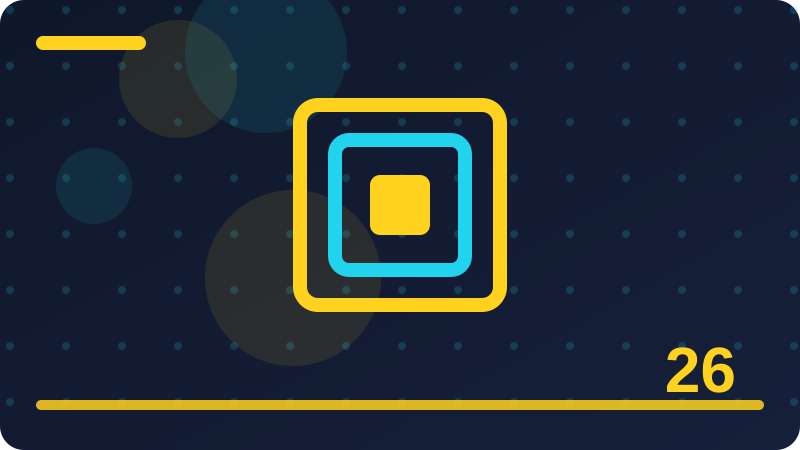

Chapter 26: Scams, Fraud and Recovery Steps

Section 1: What a Scam Really Is
A scam is a deliberate trick that uses false information, false urgency, or false trust to persuade someone to send money, share personal details, or take an action they would not take with full facts. You do not need to be an expert to use this idea well. You need a simple habit, a short pause, and a trusted way to check before you act.
One key idea here is how scams use lies and pressure rather than force to gain control of a decision. Put this point into practice with a small, concrete step you can do today rather than a big promise for later. Small steps are easier to repeat, easier to remember under stress, and easier to teach to family or colleagues. Write the step down if it helps, and keep it somewhere you will actually see it.
One key idea here is why a scam can look professional even when every claim behind it is false. Watch for the common mistake connected to this point, which is usually acting first and checking later. Reversing that order changes the outcome: check first, using a channel you trust, and only then decide. Checking first costs a few minutes; recovering later can cost weeks.
One key idea here is the difference between an honest mistake and a planned attempt to deceive. If you are unsure how this point applies to your situation, compare it with a safe example you already know. Ask yourself what is different, what is missing, and who could confirm it for you. A trusted person, an official website you reach yourself, or an official phone number you find independently can all help.
One key idea here is why feeling embarrassed after a scam should never stop someone seeking help. Teach this point to someone else in one short sentence when you have the chance. Teaching forces you to be clear, and it helps the other person too. If they ask a question you cannot answer, that question shows you exactly what to learn or check next.
Consider a busy day when you are tired and rushing between tasks. That is exactly when a simple habit matters most, because you will not have time to think deeply. A habit you have practised, such as pausing, checking independently, and keeping a record, will carry you through even when your attention is divided.
The main test of this section is simple: can you explain the safe choice to someone else, and can you do it calmly when you feel rushed? If the answer is yes, you have understood the heart of it. When in doubt, choose the safer and slower option, and keep a brief record of what you saw, when you saw it, and what you did next. A short record like that helps you explain the situation clearly later, and it helps anyone supporting you to give better advice. If something still feels unclear after you have checked, ask a trusted person before you take any step that cannot easily be undone.
Check: In your own words, what is the safest first step when you face what a scam really is, and how would you check it before acting?
Section 2: Advance-Fee Scams in Plain Words
An advance-fee scam promises a large reward, prize, inheritance, or business profit, but first asks for a smaller fee, tax, or charge that must be paid before the reward is released. The goal of this section is practical confidence: you will know what to look for, what to do first, and what to avoid doing when you feel unsure.
One key idea here is how a promised reward is used to make a small upfront payment feel reasonable. Watch for the common mistake connected to this point, which is usually acting first and checking later. Reversing that order changes the outcome: check first, using a channel you trust, and only then decide. Checking first costs a few minutes; recovering later can cost weeks.
One key idea here is why repeated new fees are a strong sign that no reward will ever arrive. If you are unsure how this point applies to your situation, compare it with a safe example you already know. Ask yourself what is different, what is missing, and who could confirm it for you. A trusted person, an official website you reach yourself, or an official phone number you find independently can all help.
One key idea here is how scammers invent officials, documents, and deadlines to sound legitimate. Teach this point to someone else in one short sentence when you have the chance. Teaching forces you to be clear, and it helps the other person too. If they ask a question you cannot answer, that question shows you exactly what to learn or check next.
One key idea here is why stopping payments early limits loss even when money has already been sent. Keep a short note about how you handled this point the first time you used it. Notes turn a one-time lesson into a repeatable habit, and they give you something useful to look back on if a similar situation appears again.
Picture explaining this idea to a friend who is worried and wants a quick answer. You would not rush them, and you would not guess. You would help them slow down, look at the evidence, and choose the safest next step together. Treat yourself with that same patience when you are the one facing the decision.
Keep this section in mind as a checklist, not as a rule to memorise word for word. Checklists work because they are short, practical, and usable even on a difficult day. When in doubt, choose the safer and slower option, and keep a brief record of what you saw, when you saw it, and what you did next. A short record like that helps you explain the situation clearly later, and it helps anyone supporting you to give better advice. If something still feels unclear after you have checked, ask a trusted person before you take any step that cannot easily be undone. Remember that a genuine organisation will understand a careful pause, while pressure to act at once is itself a reason to be cautious.
Check: In your own words, what is the safest first step when you face advance-fee scams in plain words, and how would you check it before acting?
Section 3: Romance and Trust Scams
A romance or trust scam builds a close personal relationship over time, then uses that trust to ask for money, gifts, or help with an invented emergency. Think of this as one building block. On its own it is simple, but together with the other habits in this book it forms a strong everyday defence.
One key idea here is how affection and regular contact can be used to lower normal caution. If you are unsure how this point applies to your situation, compare it with a safe example you already know. Ask yourself what is different, what is missing, and who could confirm it for you. A trusted person, an official website you reach yourself, or an official phone number you find independently can all help.
One key idea here is why an emergency story that cannot be checked independently deserves a pause. Teach this point to someone else in one short sentence when you have the chance. Teaching forces you to be clear, and it helps the other person too. If they ask a question you cannot answer, that question shows you exactly what to learn or check next.
One key idea here is how requests for secrecy isolate a victim from friends who might warn them. Keep a short note about how you handled this point the first time you used it. Notes turn a one-time lesson into a repeatable habit, and they give you something useful to look back on if a similar situation appears again.
One key idea here is why real relationships do not require urgent secret money transfers. Start by naming the point clearly in your own words, then ask what a safe version of it would look like in real life. A safe version is usually slower, simpler, and easier to explain to someone you trust. If you cannot explain it simply, that is a sign to pause and check again before you continue.
Think about a time you almost acted on incomplete information. Most people have had that experience, and it does not mean they were careless. It means the situation was designed, or simply happened, to be confusing. A clear habit gives you a way back to calm thinking in that moment.
You do not have to be perfect at this. You have to be consistent enough that the safe choice becomes your normal choice, and that consistency is built one small decision at a time. When in doubt, choose the safer and slower option, and keep a brief record of what you saw, when you saw it, and what you did next. A short record like that helps you explain the situation clearly later, and it helps anyone supporting you to give better advice. If something still feels unclear after you have checked, ask a trusted person before you take any step that cannot easily be undone. Remember that a genuine organisation will understand a careful pause, while pressure to act at once is itself a reason to be cautious.
Check: In your own words, what is the safest first step when you face romance and trust scams, and how would you check it before acting?
Section 4: Investment and Crypto Scams
Investment scams promise unusually high, fast, or guaranteed returns, often using fake dashboards, celebrity endorsements, or pressure to invest before an opportunity disappears. Many people learn this lesson only after something goes wrong. Reading it now gives you the chance to practise it while nothing is at stake.
One key idea here is why guaranteed high returns with low risk are a warning sign in any investment. Teach this point to someone else in one short sentence when you have the chance. Teaching forces you to be clear, and it helps the other person too. If they ask a question you cannot answer, that question shows you exactly what to learn or check next.
One key idea here is how fake trading screens can show profits that cannot actually be withdrawn. Keep a short note about how you handled this point the first time you used it. Notes turn a one-time lesson into a repeatable habit, and they give you something useful to look back on if a similar situation appears again.
One key idea here is why pressure to recruit others often points to a pyramid-style scheme. Start by naming the point clearly in your own words, then ask what a safe version of it would look like in real life. A safe version is usually slower, simpler, and easier to explain to someone you trust. If you cannot explain it simply, that is a sign to pause and check again before you continue.
One key idea here is how to check an investment firm through an official regulator before sending money. Put this point into practice with a small, concrete step you can do today rather than a big promise for later. Small steps are easier to repeat, easier to remember under stress, and easier to teach to family or colleagues. Write the step down if it helps, and keep it somewhere you will actually see it.
Imagine you receive a message that feels urgent and slightly confusing. Your first feeling may be worry, and worry makes it tempting to reply at once. Instead, take a breath, leave the message unanswered, and check the facts through a route you trust. That short pause is often the whole difference between a safe outcome and a costly one.
Before you move on, pick one action from this section and decide when you will do it. A habit that has a time attached to it is far more likely to happen than a good intention with no plan behind it. When in doubt, choose the safer and slower option, and keep a brief record of what you saw, when you saw it, and what you did next. A short record like that helps you explain the situation clearly later, and it helps anyone supporting you to give better advice. If something still feels unclear after you have checked, ask a trusted person before you take any step that cannot easily be undone.
Check: In your own words, what is the safest first step when you face investment and crypto scams, and how would you check it before acting?
Section 5: Impersonation Scams
An impersonation scam happens when someone pretends to be a bank, a government office, a well-known company, a colleague, or a family member in order to gain trust. A good rule here is to slow down whenever pressure appears. Pressure is often a tool used to push people past their normal good judgement.
One key idea here is how scammers copy logos, names, and writing styles to look official. Keep a short note about how you handled this point the first time you used it. Notes turn a one-time lesson into a repeatable habit, and they give you something useful to look back on if a similar situation appears again.
One key idea here is why a caller or sender identity must be verified through an independent channel. Start by naming the point clearly in your own words, then ask what a safe version of it would look like in real life. A safe version is usually slower, simpler, and easier to explain to someone you trust. If you cannot explain it simply, that is a sign to pause and check again before you continue.
One key idea here is how urgency is used to stop a victim checking the impersonation claim. Put this point into practice with a small, concrete step you can do today rather than a big promise for later. Small steps are easier to repeat, easier to remember under stress, and easier to teach to family or colleagues. Write the step down if it helps, and keep it somewhere you will actually see it.
One key idea here is why official organisations rarely demand secrecy or instant payment by unusual methods. Watch for the common mistake connected to this point, which is usually acting first and checking later. Reversing that order changes the outcome: check first, using a channel you trust, and only then decide. Checking first costs a few minutes; recovering later can cost weeks.
Consider a busy day when you are tired and rushing between tasks. That is exactly when a simple habit matters most, because you will not have time to think deeply. A habit you have practised, such as pausing, checking independently, and keeping a record, will carry you through even when your attention is divided.
The main test of this section is simple: can you explain the safe choice to someone else, and can you do it calmly when you feel rushed? If the answer is yes, you have understood the heart of it. When in doubt, choose the safer and slower option, and keep a brief record of what you saw, when you saw it, and what you did next. A short record like that helps you explain the situation clearly later, and it helps anyone supporting you to give better advice. If something still feels unclear after you have checked, ask a trusted person before you take any step that cannot easily be undone. Remember that a genuine organisation will understand a careful pause, while pressure to act at once is itself a reason to be cautious.
Check: In your own words, what is the safest first step when you face impersonation scams, and how would you check it before acting?
Section 6: Phishing Messages That Lead to Fraud
Many frauds begin with a phishing message that looks like a genuine alert, delivery notice, or account warning and leads the reader to a fake page or a harmful request. This matters because small decisions made in a hurry can have large consequences, and a calm, clear habit protects you better than fear or speed ever will.
One key idea here is how a message can create fear about an account being closed or locked. Start by naming the point clearly in your own words, then ask what a safe version of it would look like in real life. A safe version is usually slower, simpler, and easier to explain to someone you trust. If you cannot explain it simply, that is a sign to pause and check again before you continue.
One key idea here is why links and attachments in unexpected messages should be treated with care. Put this point into practice with a small, concrete step you can do today rather than a big promise for later. Small steps are easier to repeat, easier to remember under stress, and easier to teach to family or colleagues. Write the step down if it helps, and keep it somewhere you will actually see it.
One key idea here is how to reach a service directly by typing its address yourself instead of clicking. Watch for the common mistake connected to this point, which is usually acting first and checking later. Reversing that order changes the outcome: check first, using a channel you trust, and only then decide. Checking first costs a few minutes; recovering later can cost weeks.
One key idea here is why a genuine alert can always be checked inside the official app or website. If you are unsure how this point applies to your situation, compare it with a safe example you already know. Ask yourself what is different, what is missing, and who could confirm it for you. A trusted person, an official website you reach yourself, or an official phone number you find independently can all help.
Picture explaining this idea to a friend who is worried and wants a quick answer. You would not rush them, and you would not guess. You would help them slow down, look at the evidence, and choose the safest next step together. Treat yourself with that same patience when you are the one facing the decision.
Keep this section in mind as a checklist, not as a rule to memorise word for word. Checklists work because they are short, practical, and usable even on a difficult day. When in doubt, choose the safer and slower option, and keep a brief record of what you saw, when you saw it, and what you did next. A short record like that helps you explain the situation clearly later, and it helps anyone supporting you to give better advice. If something still feels unclear after you have checked, ask a trusted person before you take any step that cannot easily be undone.
Check: In your own words, what is the safest first step when you face phishing messages that lead to fraud, and how would you check it before acting?
Section 7: Fake Shops and Online Shopping Scams
A fake shop offers popular goods at very low prices, takes payment, and then delivers nothing, delivers a poor copy, or disappears entirely. You do not need to be an expert to use this idea well. You need a simple habit, a short pause, and a trusted way to check before you act.
One key idea here is how extremely low prices are used to attract buyers away from trusted sellers. Put this point into practice with a small, concrete step you can do today rather than a big promise for later. Small steps are easier to repeat, easier to remember under stress, and easier to teach to family or colleagues. Write the step down if it helps, and keep it somewhere you will actually see it.
One key idea here is why a new shop with no verifiable address or reviews deserves extra checking. Watch for the common mistake connected to this point, which is usually acting first and checking later. Reversing that order changes the outcome: check first, using a channel you trust, and only then decide. Checking first costs a few minutes; recovering later can cost weeks.
One key idea here is how secure payment methods give buyers more protection than direct transfers. If you are unsure how this point applies to your situation, compare it with a safe example you already know. Ask yourself what is different, what is missing, and who could confirm it for you. A trusted person, an official website you reach yourself, or an official phone number you find independently can all help.
One key idea here is why keeping order records and screenshots helps if a dispute is needed. Teach this point to someone else in one short sentence when you have the chance. Teaching forces you to be clear, and it helps the other person too. If they ask a question you cannot answer, that question shows you exactly what to learn or check next.
Think about a time you almost acted on incomplete information. Most people have had that experience, and it does not mean they were careless. It means the situation was designed, or simply happened, to be confusing. A clear habit gives you a way back to calm thinking in that moment.
You do not have to be perfect at this. You have to be consistent enough that the safe choice becomes your normal choice, and that consistency is built one small decision at a time. When in doubt, choose the safer and slower option, and keep a brief record of what you saw, when you saw it, and what you did next. A short record like that helps you explain the situation clearly later, and it helps anyone supporting you to give better advice. If something still feels unclear after you have checked, ask a trusted person before you take any step that cannot easily be undone. Remember that a genuine organisation will understand a careful pause, while pressure to act at once is itself a reason to be cautious.
Check: In your own words, what is the safest first step when you face fake shops and online shopping scams, and how would you check it before acting?
Section 8: Job and Task Scams
Job scams offer easy work with high pay, then ask for a fee, personal documents, or unpaid tasks, or use the victim to move money for criminals. The goal of this section is practical confidence: you will know what to look for, what to do first, and what to avoid doing when you feel unsure.
One key idea here is how a job offer that asks you to pay to start work should raise suspicion. Watch for the common mistake connected to this point, which is usually acting first and checking later. Reversing that order changes the outcome: check first, using a channel you trust, and only then decide. Checking first costs a few minutes; recovering later can cost weeks.
One key idea here is why genuine employers do not ask new staff to move money through personal accounts. If you are unsure how this point applies to your situation, compare it with a safe example you already know. Ask yourself what is different, what is missing, and who could confirm it for you. A trusted person, an official website you reach yourself, or an official phone number you find independently can all help.
One key idea here is how fake recruiters copy real company names and job adverts. Teach this point to someone else in one short sentence when you have the chance. Teaching forces you to be clear, and it helps the other person too. If they ask a question you cannot answer, that question shows you exactly what to learn or check next.
One key idea here is why checking a job through the company's official contact details matters. Keep a short note about how you handled this point the first time you used it. Notes turn a one-time lesson into a repeatable habit, and they give you something useful to look back on if a similar situation appears again.
Imagine you receive a message that feels urgent and slightly confusing. Your first feeling may be worry, and worry makes it tempting to reply at once. Instead, take a breath, leave the message unanswered, and check the facts through a route you trust. That short pause is often the whole difference between a safe outcome and a costly one.
Before you move on, pick one action from this section and decide when you will do it. A habit that has a time attached to it is far more likely to happen than a good intention with no plan behind it. When in doubt, choose the safer and slower option, and keep a brief record of what you saw, when you saw it, and what you did next. A short record like that helps you explain the situation clearly later, and it helps anyone supporting you to give better advice. If something still feels unclear after you have checked, ask a trusted person before you take any step that cannot easily be undone. Remember that a genuine organisation will understand a careful pause, while pressure to act at once is itself a reason to be cautious.
Check: In your own words, what is the safest first step when you face job and task scams, and how would you check it before acting?
Section 9: Lottery, Prize and Giveaway Scams
Lottery and prize scams tell someone they have won money or a valuable item, then ask for a fee, tax, or personal details before the prize can be claimed. Think of this as one building block. On its own it is simple, but together with the other habits in this book it forms a strong everyday defence.
One key idea here is why a prize you never entered cannot be a genuine win. If you are unsure how this point applies to your situation, compare it with a safe example you already know. Ask yourself what is different, what is missing, and who could confirm it for you. A trusted person, an official website you reach yourself, or an official phone number you find independently can all help.
One key idea here is how small release fees are used to extract money again and again. Teach this point to someone else in one short sentence when you have the chance. Teaching forces you to be clear, and it helps the other person too. If they ask a question you cannot answer, that question shows you exactly what to learn or check next.
One key idea here is why requests for bank details to claim a prize are unsafe. Keep a short note about how you handled this point the first time you used it. Notes turn a one-time lesson into a repeatable habit, and they give you something useful to look back on if a similar situation appears again.
One key idea here is how official prize schemes are checked through their own published channels. Start by naming the point clearly in your own words, then ask what a safe version of it would look like in real life. A safe version is usually slower, simpler, and easier to explain to someone you trust. If you cannot explain it simply, that is a sign to pause and check again before you continue.
Consider a busy day when you are tired and rushing between tasks. That is exactly when a simple habit matters most, because you will not have time to think deeply. A habit you have practised, such as pausing, checking independently, and keeping a record, will carry you through even when your attention is divided.
The main test of this section is simple: can you explain the safe choice to someone else, and can you do it calmly when you feel rushed? If the answer is yes, you have understood the heart of it. When in doubt, choose the safer and slower option, and keep a brief record of what you saw, when you saw it, and what you did next. A short record like that helps you explain the situation clearly later, and it helps anyone supporting you to give better advice. If something still feels unclear after you have checked, ask a trusted person before you take any step that cannot easily be undone.
Check: In your own words, what is the safest first step when you face lottery, prize and giveaway scams, and how would you check it before acting?
Section 10: Tech Support Scams
A tech support scam uses a fake warning, pop-up, or phone call claiming a device is infected, then charges for unnecessary fixes or gains remote access to the device. Many people learn this lesson only after something goes wrong. Reading it now gives you the chance to practise it while nothing is at stake.
One key idea here is how alarming pop-ups are designed to create panic and quick obedience. Teach this point to someone else in one short sentence when you have the chance. Teaching forces you to be clear, and it helps the other person too. If they ask a question you cannot answer, that question shows you exactly what to learn or check next.
One key idea here is why a genuine support team does not cold-call about a device problem. Keep a short note about how you handled this point the first time you used it. Notes turn a one-time lesson into a repeatable habit, and they give you something useful to look back on if a similar situation appears again.
One key idea here is how remote access given to a stranger can expose personal files and accounts. Start by naming the point clearly in your own words, then ask what a safe version of it would look like in real life. A safe version is usually slower, simpler, and easier to explain to someone you trust. If you cannot explain it simply, that is a sign to pause and check again before you continue.
One key idea here is why ending the call and contacting support through official channels is safer. Put this point into practice with a small, concrete step you can do today rather than a big promise for later. Small steps are easier to repeat, easier to remember under stress, and easier to teach to family or colleagues. Write the step down if it helps, and keep it somewhere you will actually see it.
Picture explaining this idea to a friend who is worried and wants a quick answer. You would not rush them, and you would not guess. You would help them slow down, look at the evidence, and choose the safest next step together. Treat yourself with that same patience when you are the one facing the decision.
Keep this section in mind as a checklist, not as a rule to memorise word for word. Checklists work because they are short, practical, and usable even on a difficult day. When in doubt, choose the safer and slower option, and keep a brief record of what you saw, when you saw it, and what you did next. A short record like that helps you explain the situation clearly later, and it helps anyone supporting you to give better advice. If something still feels unclear after you have checked, ask a trusted person before you take any step that cannot easily be undone. Remember that a genuine organisation will understand a careful pause, while pressure to act at once is itself a reason to be cautious.
def scam_checklist(message_note):
"""Print a defensive pause-verify-record checklist for a suspicious message you received."""
checks = ["Pause before replying or paying.", "Verify through an official channel you reach yourself.", "Save the message, sender, and date as evidence.", "Report it to your bank, the platform, or the police if money moved."]
print("Suspicious message note:", message_note)
for step in checks:
print("- " + step)
scam_checklist("Urgent prize message - not replied to")Check: In your own words, what is the safest first step when you face tech support scams, and how would you check it before acting?
Section 11: Bank and Payment Fraud Basics
Bank and payment fraud involves unauthorised or tricked transfers, card use, or account changes, and quick reporting can greatly improve the chance of stopping further loss. A good rule here is to slow down whenever pressure appears. Pressure is often a tool used to push people past their normal good judgement.
One key idea here is how unauthorised transactions should be reported to the bank as soon as they are noticed. Keep a short note about how you handled this point the first time you used it. Notes turn a one-time lesson into a repeatable habit, and they give you something useful to look back on if a similar situation appears again.
One key idea here is why freezing a card or account quickly can prevent further withdrawals. Start by naming the point clearly in your own words, then ask what a safe version of it would look like in real life. A safe version is usually slower, simpler, and easier to explain to someone you trust. If you cannot explain it simply, that is a sign to pause and check again before you continue.
One key idea here is how keeping transaction records helps a bank investigate a claim. Put this point into practice with a small, concrete step you can do today rather than a big promise for later. Small steps are easier to repeat, easier to remember under stress, and easier to teach to family or colleagues. Write the step down if it helps, and keep it somewhere you will actually see it.
One key idea here is why a bank will never ask for a full password or one-time code by phone or message. Watch for the common mistake connected to this point, which is usually acting first and checking later. Reversing that order changes the outcome: check first, using a channel you trust, and only then decide. Checking first costs a few minutes; recovering later can cost weeks.
Think about a time you almost acted on incomplete information. Most people have had that experience, and it does not mean they were careless. It means the situation was designed, or simply happened, to be confusing. A clear habit gives you a way back to calm thinking in that moment.
You do not have to be perfect at this. You have to be consistent enough that the safe choice becomes your normal choice, and that consistency is built one small decision at a time. When in doubt, choose the safer and slower option, and keep a brief record of what you saw, when you saw it, and what you did next. A short record like that helps you explain the situation clearly later, and it helps anyone supporting you to give better advice. If something still feels unclear after you have checked, ask a trusted person before you take any step that cannot easily be undone. Remember that a genuine organisation will understand a careful pause, while pressure to act at once is itself a reason to be cautious.
Check: In your own words, what is the safest first step when you face bank and payment fraud basics, and how would you check it before acting?
Section 12: Card Fraud and Skimming in Plain Words
Card fraud happens when card details are copied, stolen, or used without permission, sometimes through tampered machines, fake websites, or data stolen elsewhere. This matters because small decisions made in a hurry can have large consequences, and a calm, clear habit protects you better than fear or speed ever will.
One key idea here is how covering a keypad and checking a machine can reduce simple skimming risks. Start by naming the point clearly in your own words, then ask what a safe version of it would look like in real life. A safe version is usually slower, simpler, and easier to explain to someone you trust. If you cannot explain it simply, that is a sign to pause and check again before you continue.
One key idea here is why unusual small charges should be checked rather than ignored. Put this point into practice with a small, concrete step you can do today rather than a big promise for later. Small steps are easier to repeat, easier to remember under stress, and easier to teach to family or colleagues. Write the step down if it helps, and keep it somewhere you will actually see it.
One key idea here is how card alerts help a holder spot misuse early. Watch for the common mistake connected to this point, which is usually acting first and checking later. Reversing that order changes the outcome: check first, using a channel you trust, and only then decide. Checking first costs a few minutes; recovering later can cost weeks.
One key idea here is why a lost or stolen card should be reported and replaced at once. If you are unsure how this point applies to your situation, compare it with a safe example you already know. Ask yourself what is different, what is missing, and who could confirm it for you. A trusted person, an official website you reach yourself, or an official phone number you find independently can all help.
Imagine you receive a message that feels urgent and slightly confusing. Your first feeling may be worry, and worry makes it tempting to reply at once. Instead, take a breath, leave the message unanswered, and check the facts through a route you trust. That short pause is often the whole difference between a safe outcome and a costly one.
Before you move on, pick one action from this section and decide when you will do it. A habit that has a time attached to it is far more likely to happen than a good intention with no plan behind it. When in doubt, choose the safer and slower option, and keep a brief record of what you saw, when you saw it, and what you did next. A short record like that helps you explain the situation clearly later, and it helps anyone supporting you to give better advice. If something still feels unclear after you have checked, ask a trusted person before you take any step that cannot easily be undone.
Check: In your own words, what is the safest first step when you face card fraud and skimming in plain words, and how would you check it before acting?
Section 13: Mobile Money and Transfer Fraud
Mobile money and transfer fraud uses fake alerts, wrong-number tricks, or impersonation to persuade someone to send money or approve a transfer they did not intend. You do not need to be an expert to use this idea well. You need a simple habit, a short pause, and a trusted way to check before you act.
One key idea here is how fake payment confirmation messages are used to claim money was sent. Put this point into practice with a small, concrete step you can do today rather than a big promise for later. Small steps are easier to repeat, easier to remember under stress, and easier to teach to family or colleagues. Write the step down if it helps, and keep it somewhere you will actually see it.
One key idea here is why a transfer should be confirmed inside the official app, not from a screenshot. Watch for the common mistake connected to this point, which is usually acting first and checking later. Reversing that order changes the outcome: check first, using a channel you trust, and only then decide. Checking first costs a few minutes; recovering later can cost weeks.
One key idea here is how a wrong-number message can be the start of a longer confidence trick. If you are unsure how this point applies to your situation, compare it with a safe example you already know. Ask yourself what is different, what is missing, and who could confirm it for you. A trusted person, an official website you reach yourself, or an official phone number you find independently can all help.
One key idea here is why transfer details must be checked digit by digit before confirming. Teach this point to someone else in one short sentence when you have the chance. Teaching forces you to be clear, and it helps the other person too. If they ask a question you cannot answer, that question shows you exactly what to learn or check next.
Consider a busy day when you are tired and rushing between tasks. That is exactly when a simple habit matters most, because you will not have time to think deeply. A habit you have practised, such as pausing, checking independently, and keeping a record, will carry you through even when your attention is divided.
The main test of this section is simple: can you explain the safe choice to someone else, and can you do it calmly when you feel rushed? If the answer is yes, you have understood the heart of it. When in doubt, choose the safer and slower option, and keep a brief record of what you saw, when you saw it, and what you did next. A short record like that helps you explain the situation clearly later, and it helps anyone supporting you to give better advice. If something still feels unclear after you have checked, ask a trusted person before you take any step that cannot easily be undone.
Check: In your own words, what is the safest first step when you face mobile money and transfer fraud, and how would you check it before acting?
Section 14: Social Media Account Takeover Scams
Account takeover scams begin when a criminal gains access to a social account, then uses it to ask the owner's friends for money, codes, or help. The goal of this section is practical confidence: you will know what to look for, what to do first, and what to avoid doing when you feel unsure.
One key idea here is how a hacked friend's account can send convincing urgent money requests. Watch for the common mistake connected to this point, which is usually acting first and checking later. Reversing that order changes the outcome: check first, using a channel you trust, and only then decide. Checking first costs a few minutes; recovering later can cost weeks.
One key idea here is why a request from a friend should be confirmed through a different channel. If you are unsure how this point applies to your situation, compare it with a safe example you already know. Ask yourself what is different, what is missing, and who could confirm it for you. A trusted person, an official website you reach yourself, or an official phone number you find independently can all help.
One key idea here is how weak or reused passwords make takeover easier. Teach this point to someone else in one short sentence when you have the chance. Teaching forces you to be clear, and it helps the other person too. If they ask a question you cannot answer, that question shows you exactly what to learn or check next.
One key idea here is why recovery details and two-factor protection matter for social accounts. Keep a short note about how you handled this point the first time you used it. Notes turn a one-time lesson into a repeatable habit, and they give you something useful to look back on if a similar situation appears again.
Picture explaining this idea to a friend who is worried and wants a quick answer. You would not rush them, and you would not guess. You would help them slow down, look at the evidence, and choose the safest next step together. Treat yourself with that same patience when you are the one facing the decision.
Keep this section in mind as a checklist, not as a rule to memorise word for word. Checklists work because they are short, practical, and usable even on a difficult day. When in doubt, choose the safer and slower option, and keep a brief record of what you saw, when you saw it, and what you did next. A short record like that helps you explain the situation clearly later, and it helps anyone supporting you to give better advice. If something still feels unclear after you have checked, ask a trusted person before you take any step that cannot easily be undone. Remember that a genuine organisation will understand a careful pause, while pressure to act at once is itself a reason to be cautious.
Check: In your own words, what is the safest first step when you face social media account takeover scams, and how would you check it before acting?
Section 15: Giveaway and Celebrity Endorsement Scams
Giveaway scams misuse famous names, photos, or videos to claim a celebrity is doubling money, giving away products, or endorsing an investment. Think of this as one building block. On its own it is simple, but together with the other habits in this book it forms a strong everyday defence.
One key idea here is how stolen photos and fake videos make a scam look endorsed by a public figure. If you are unsure how this point applies to your situation, compare it with a safe example you already know. Ask yourself what is different, what is missing, and who could confirm it for you. A trusted person, an official website you reach yourself, or an official phone number you find independently can all help.
One key idea here is why a celebrity giveaway that asks for payment first is not genuine. Teach this point to someone else in one short sentence when you have the chance. Teaching forces you to be clear, and it helps the other person too. If they ask a question you cannot answer, that question shows you exactly what to learn or check next.
One key idea here is how fake accounts copy verified profiles closely enough to confuse readers. Keep a short note about how you handled this point the first time you used it. Notes turn a one-time lesson into a repeatable habit, and they give you something useful to look back on if a similar situation appears again.
One key idea here is why official celebrity or brand channels are the only safe place to check a promotion. Start by naming the point clearly in your own words, then ask what a safe version of it would look like in real life. A safe version is usually slower, simpler, and easier to explain to someone you trust. If you cannot explain it simply, that is a sign to pause and check again before you continue.
Think about a time you almost acted on incomplete information. Most people have had that experience, and it does not mean they were careless. It means the situation was designed, or simply happened, to be confusing. A clear habit gives you a way back to calm thinking in that moment.
You do not have to be perfect at this. You have to be consistent enough that the safe choice becomes your normal choice, and that consistency is built one small decision at a time. When in doubt, choose the safer and slower option, and keep a brief record of what you saw, when you saw it, and what you did next. A short record like that helps you explain the situation clearly later, and it helps anyone supporting you to give better advice. If something still feels unclear after you have checked, ask a trusted person before you take any step that cannot easily be undone. Remember that a genuine organisation will understand a careful pause, while pressure to act at once is itself a reason to be cautious.
Check: In your own words, what is the safest first step when you face giveaway and celebrity endorsement scams, and how would you check it before acting?
Section 16: Rental and Property Scams
Rental scams advertise homes that do not exist, are not available, or belong to someone else, and pressure renters to pay deposits before viewing. Many people learn this lesson only after something goes wrong. Reading it now gives you the chance to practise it while nothing is at stake.
One key idea here is how below-market rent is used to attract many hopeful applicants quickly. Teach this point to someone else in one short sentence when you have the chance. Teaching forces you to be clear, and it helps the other person too. If they ask a question you cannot answer, that question shows you exactly what to learn or check next.
One key idea here is why paying before viewing a property in person is risky. Keep a short note about how you handled this point the first time you used it. Notes turn a one-time lesson into a repeatable habit, and they give you something useful to look back on if a similar situation appears again.
One key idea here is how scammers reuse photos from genuine listings to create fake adverts. Start by naming the point clearly in your own words, then ask what a safe version of it would look like in real life. A safe version is usually slower, simpler, and easier to explain to someone you trust. If you cannot explain it simply, that is a sign to pause and check again before you continue.
One key idea here is why ownership and agent details should be checked independently. Put this point into practice with a small, concrete step you can do today rather than a big promise for later. Small steps are easier to repeat, easier to remember under stress, and easier to teach to family or colleagues. Write the step down if it helps, and keep it somewhere you will actually see it.
Imagine you receive a message that feels urgent and slightly confusing. Your first feeling may be worry, and worry makes it tempting to reply at once. Instead, take a breath, leave the message unanswered, and check the facts through a route you trust. That short pause is often the whole difference between a safe outcome and a costly one.
Before you move on, pick one action from this section and decide when you will do it. A habit that has a time attached to it is far more likely to happen than a good intention with no plan behind it. When in doubt, choose the safer and slower option, and keep a brief record of what you saw, when you saw it, and what you did next. A short record like that helps you explain the situation clearly later, and it helps anyone supporting you to give better advice. If something still feels unclear after you have checked, ask a trusted person before you take any step that cannot easily be undone. Remember that a genuine organisation will understand a careful pause, while pressure to act at once is itself a reason to be cautious.
Check: In your own words, what is the safest first step when you face rental and property scams, and how would you check it before acting?
Section 17: Travel and Ticket Scams
Travel scams sell fake flights, holidays, tickets, or visas, or add hidden charges to a booking that was never properly made. A good rule here is to slow down whenever pressure appears. Pressure is often a tool used to push people past their normal good judgement.
One key idea here is how very cheap travel deals can hide a booking that does not exist. Keep a short note about how you handled this point the first time you used it. Notes turn a one-time lesson into a repeatable habit, and they give you something useful to look back on if a similar situation appears again.
One key idea here is why booking confirmations should be checked with the airline or venue directly. Start by naming the point clearly in your own words, then ask what a safe version of it would look like in real life. A safe version is usually slower, simpler, and easier to explain to someone you trust. If you cannot explain it simply, that is a sign to pause and check again before you continue.
One key idea here is how fake travel agents use professional websites and social adverts. Put this point into practice with a small, concrete step you can do today rather than a big promise for later. Small steps are easier to repeat, easier to remember under stress, and easier to teach to family or colleagues. Write the step down if it helps, and keep it somewhere you will actually see it.
One key idea here is why paying by a protected method matters for travel purchases. Watch for the common mistake connected to this point, which is usually acting first and checking later. Reversing that order changes the outcome: check first, using a channel you trust, and only then decide. Checking first costs a few minutes; recovering later can cost weeks.
Consider a busy day when you are tired and rushing between tasks. That is exactly when a simple habit matters most, because you will not have time to think deeply. A habit you have practised, such as pausing, checking independently, and keeping a record, will carry you through even when your attention is divided.
The main test of this section is simple: can you explain the safe choice to someone else, and can you do it calmly when you feel rushed? If the answer is yes, you have understood the heart of it. When in doubt, choose the safer and slower option, and keep a brief record of what you saw, when you saw it, and what you did next. A short record like that helps you explain the situation clearly later, and it helps anyone supporting you to give better advice. If something still feels unclear after you have checked, ask a trusted person before you take any step that cannot easily be undone. Remember that a genuine organisation will understand a careful pause, while pressure to act at once is itself a reason to be cautious.
Check: In your own words, what is the safest first step when you face travel and ticket scams, and how would you check it before acting?
Section 18: Charity and Disaster Scams
Charity scams misuse sympathy after a disaster or crisis, asking for donations that go to criminals rather than to people in need. This matters because small decisions made in a hurry can have large consequences, and a calm, clear habit protects you better than fear or speed ever will.
One key idea here is how emotional images and urgent appeals are used to bypass normal checking. Start by naming the point clearly in your own words, then ask what a safe version of it would look like in real life. A safe version is usually slower, simpler, and easier to explain to someone you trust. If you cannot explain it simply, that is a sign to pause and check again before you continue.
One key idea here is why a new charity name should be verified before donating. Put this point into practice with a small, concrete step you can do today rather than a big promise for later. Small steps are easier to repeat, easier to remember under stress, and easier to teach to family or colleagues. Write the step down if it helps, and keep it somewhere you will actually see it.
One key idea here is how official charity registers help confirm a genuine organisation. Watch for the common mistake connected to this point, which is usually acting first and checking later. Reversing that order changes the outcome: check first, using a channel you trust, and only then decide. Checking first costs a few minutes; recovering later can cost weeks.
One key idea here is why donating through a charity's own official channel is safer. If you are unsure how this point applies to your situation, compare it with a safe example you already know. Ask yourself what is different, what is missing, and who could confirm it for you. A trusted person, an official website you reach yourself, or an official phone number you find independently can all help.
Picture explaining this idea to a friend who is worried and wants a quick answer. You would not rush them, and you would not guess. You would help them slow down, look at the evidence, and choose the safest next step together. Treat yourself with that same patience when you are the one facing the decision.
Keep this section in mind as a checklist, not as a rule to memorise word for word. Checklists work because they are short, practical, and usable even on a difficult day. When in doubt, choose the safer and slower option, and keep a brief record of what you saw, when you saw it, and what you did next. A short record like that helps you explain the situation clearly later, and it helps anyone supporting you to give better advice. If something still feels unclear after you have checked, ask a trusted person before you take any step that cannot easily be undone. Remember that a genuine organisation will understand a careful pause, while pressure to act at once is itself a reason to be cautious.
Check: In your own words, what is the safest first step when you face charity and disaster scams, and how would you check it before acting?
Section 19: Tax and Government Impersonation Scams
Tax and government scams claim unpaid tax, a fine, or a legal problem, and threaten arrest or account closure unless payment is made immediately. You do not need to be an expert to use this idea well. You need a simple habit, a short pause, and a trusted way to check before you act.
One key idea here is how threats of arrest are used to create panic and instant payment. Put this point into practice with a small, concrete step you can do today rather than a big promise for later. Small steps are easier to repeat, easier to remember under stress, and easier to teach to family or colleagues. Write the step down if it helps, and keep it somewhere you will actually see it.
One key idea here is why government bodies do not demand payment by gift cards or crypto transfers. Watch for the common mistake connected to this point, which is usually acting first and checking later. Reversing that order changes the outcome: check first, using a channel you trust, and only then decide. Checking first costs a few minutes; recovering later can cost weeks.
One key idea here is how a genuine notice can be checked through official contact details. If you are unsure how this point applies to your situation, compare it with a safe example you already know. Ask yourself what is different, what is missing, and who could confirm it for you. A trusted person, an official website you reach yourself, or an official phone number you find independently can all help.
One key idea here is why keeping the message and reporting it helps protect others. Teach this point to someone else in one short sentence when you have the chance. Teaching forces you to be clear, and it helps the other person too. If they ask a question you cannot answer, that question shows you exactly what to learn or check next.
Think about a time you almost acted on incomplete information. Most people have had that experience, and it does not mean they were careless. It means the situation was designed, or simply happened, to be confusing. A clear habit gives you a way back to calm thinking in that moment.
You do not have to be perfect at this. You have to be consistent enough that the safe choice becomes your normal choice, and that consistency is built one small decision at a time. When in doubt, choose the safer and slower option, and keep a brief record of what you saw, when you saw it, and what you did next. A short record like that helps you explain the situation clearly later, and it helps anyone supporting you to give better advice. If something still feels unclear after you have checked, ask a trusted person before you take any step that cannot easily be undone. Remember that a genuine organisation will understand a careful pause, while pressure to act at once is itself a reason to be cautious.
Check: In your own words, what is the safest first step when you face tax and government impersonation scams, and how would you check it before acting?
Section 20: Utility and Bill Scams
Utility scams pretend a power, water, phone, or internet service will be cut off unless an overdue bill is paid at once, often by an unusual method. The goal of this section is practical confidence: you will know what to look for, what to do first, and what to avoid doing when you feel unsure.
One key idea here is how a disconnection threat is used to force a rushed payment. Watch for the common mistake connected to this point, which is usually acting first and checking later. Reversing that order changes the outcome: check first, using a channel you trust, and only then decide. Checking first costs a few minutes; recovering later can cost weeks.
One key idea here is why account status should be checked inside the official provider app or account. If you are unsure how this point applies to your situation, compare it with a safe example you already know. Ask yourself what is different, what is missing, and who could confirm it for you. A trusted person, an official website you reach yourself, or an official phone number you find independently can all help.
One key idea here is how scammers spoof provider numbers and email addresses. Teach this point to someone else in one short sentence when you have the chance. Teaching forces you to be clear, and it helps the other person too. If they ask a question you cannot answer, that question shows you exactly what to learn or check next.
One key idea here is why an unusual payment method requested for a bill is a warning sign. Keep a short note about how you handled this point the first time you used it. Notes turn a one-time lesson into a repeatable habit, and they give you something useful to look back on if a similar situation appears again.
Imagine you receive a message that feels urgent and slightly confusing. Your first feeling may be worry, and worry makes it tempting to reply at once. Instead, take a breath, leave the message unanswered, and check the facts through a route you trust. That short pause is often the whole difference between a safe outcome and a costly one.
Before you move on, pick one action from this section and decide when you will do it. A habit that has a time attached to it is far more likely to happen than a good intention with no plan behind it. When in doubt, choose the safer and slower option, and keep a brief record of what you saw, when you saw it, and what you did next. A short record like that helps you explain the situation clearly later, and it helps anyone supporting you to give better advice. If something still feels unclear after you have checked, ask a trusted person before you take any step that cannot easily be undone. Remember that a genuine organisation will understand a careful pause, while pressure to act at once is itself a reason to be cautious.
Check: In your own words, what is the safest first step when you face utility and bill scams, and how would you check it before acting?
Section 21: Delivery and Parcel Scams
Delivery scams send fake messages about a missed parcel, unpaid fee, or redelivery, leading to a fake payment page or a request for personal details. Think of this as one building block. On its own it is simple, but together with the other habits in this book it forms a strong everyday defence.
One key idea here is how a parcel message about an order you did not place deserves checking first. If you are unsure how this point applies to your situation, compare it with a safe example you already know. Ask yourself what is different, what is missing, and who could confirm it for you. A trusted person, an official website you reach yourself, or an official phone number you find independently can all help.
One key idea here is why tracking should be checked on the carrier's official site. Teach this point to someone else in one short sentence when you have the chance. Teaching forces you to be clear, and it helps the other person too. If they ask a question you cannot answer, that question shows you exactly what to learn or check next.
One key idea here is how small fee requests are used to harvest card details. Keep a short note about how you handled this point the first time you used it. Notes turn a one-time lesson into a repeatable habit, and they give you something useful to look back on if a similar situation appears again.
One key idea here is why a delivery company will not ask for full account passwords. Start by naming the point clearly in your own words, then ask what a safe version of it would look like in real life. A safe version is usually slower, simpler, and easier to explain to someone you trust. If you cannot explain it simply, that is a sign to pause and check again before you continue.
Consider a busy day when you are tired and rushing between tasks. That is exactly when a simple habit matters most, because you will not have time to think deeply. A habit you have practised, such as pausing, checking independently, and keeping a record, will carry you through even when your attention is divided.
The main test of this section is simple: can you explain the safe choice to someone else, and can you do it calmly when you feel rushed? If the answer is yes, you have understood the heart of it. When in doubt, choose the safer and slower option, and keep a brief record of what you saw, when you saw it, and what you did next. A short record like that helps you explain the situation clearly later, and it helps anyone supporting you to give better advice. If something still feels unclear after you have checked, ask a trusted person before you take any step that cannot easily be undone. Remember that a genuine organisation will understand a careful pause, while pressure to act at once is itself a reason to be cautious.
Check: In your own words, what is the safest first step when you face delivery and parcel scams, and how would you check it before acting?
Section 22: Loan and Credit Scams
Loan scams promise quick approval regardless of credit history, then charge upfront fees, steal personal details, or trap borrowers in unfair terms. Many people learn this lesson only after something goes wrong. Reading it now gives you the chance to practise it while nothing is at stake.
One key idea here is how guaranteed approval claims are used to attract people in urgent need. Teach this point to someone else in one short sentence when you have the chance. Teaching forces you to be clear, and it helps the other person too. If they ask a question you cannot answer, that question shows you exactly what to learn or check next.
One key idea here is why upfront loan fees paid before any money arrives are suspicious. Keep a short note about how you handled this point the first time you used it. Notes turn a one-time lesson into a repeatable habit, and they give you something useful to look back on if a similar situation appears again.
One key idea here is how loan adverts can hide identity theft behind an application form. Start by naming the point clearly in your own words, then ask what a safe version of it would look like in real life. A safe version is usually slower, simpler, and easier to explain to someone you trust. If you cannot explain it simply, that is a sign to pause and check again before you continue.
One key idea here is why a licensed lender's details should be verified before applying. Put this point into practice with a small, concrete step you can do today rather than a big promise for later. Small steps are easier to repeat, easier to remember under stress, and easier to teach to family or colleagues. Write the step down if it helps, and keep it somewhere you will actually see it.
Picture explaining this idea to a friend who is worried and wants a quick answer. You would not rush them, and you would not guess. You would help them slow down, look at the evidence, and choose the safest next step together. Treat yourself with that same patience when you are the one facing the decision.
Keep this section in mind as a checklist, not as a rule to memorise word for word. Checklists work because they are short, practical, and usable even on a difficult day. When in doubt, choose the safer and slower option, and keep a brief record of what you saw, when you saw it, and what you did next. A short record like that helps you explain the situation clearly later, and it helps anyone supporting you to give better advice. If something still feels unclear after you have checked, ask a trusted person before you take any step that cannot easily be undone. Remember that a genuine organisation will understand a careful pause, while pressure to act at once is itself a reason to be cautious.
Check: In your own words, what is the safest first step when you face loan and credit scams, and how would you check it before acting?
Section 23: Recovery Scams: Scammed Twice
A recovery scam targets people who have already lost money, offering to recover it for a fee, and then steals a second payment. A good rule here is to slow down whenever pressure appears. Pressure is often a tool used to push people past their normal good judgement.
One key idea here is how hope of getting money back makes a second scam especially effective. Keep a short note about how you handled this point the first time you used it. Notes turn a one-time lesson into a repeatable habit, and they give you something useful to look back on if a similar situation appears again.
One key idea here is why anyone charging upfront to recover scam losses should be treated with suspicion. Start by naming the point clearly in your own words, then ask what a safe version of it would look like in real life. A safe version is usually slower, simpler, and easier to explain to someone you trust. If you cannot explain it simply, that is a sign to pause and check again before you continue.
One key idea here is how fake law firms and recovery agents copy official-looking documents. Put this point into practice with a small, concrete step you can do today rather than a big promise for later. Small steps are easier to repeat, easier to remember under stress, and easier to teach to family or colleagues. Write the step down if it helps, and keep it somewhere you will actually see it.
One key idea here is why reporting through official channels is safer than paying a recovery offer. Watch for the common mistake connected to this point, which is usually acting first and checking later. Reversing that order changes the outcome: check first, using a channel you trust, and only then decide. Checking first costs a few minutes; recovering later can cost weeks.
Think about a time you almost acted on incomplete information. Most people have had that experience, and it does not mean they were careless. It means the situation was designed, or simply happened, to be confusing. A clear habit gives you a way back to calm thinking in that moment.
You do not have to be perfect at this. You have to be consistent enough that the safe choice becomes your normal choice, and that consistency is built one small decision at a time. When in doubt, choose the safer and slower option, and keep a brief record of what you saw, when you saw it, and what you did next. A short record like that helps you explain the situation clearly later, and it helps anyone supporting you to give better advice. If something still feels unclear after you have checked, ask a trusted person before you take any step that cannot easily be undone. Remember that a genuine organisation will understand a careful pause, while pressure to act at once is itself a reason to be cautious.
Check: In your own words, what is the safest first step when you face recovery scams: scammed twice, and how would you check it before acting?
Section 24: How Scammers Find Their Victims
Scammers find victims through leaked data, public posts, bought lists, random messages, and social platforms, then test who replies or clicks. This matters because small decisions made in a hurry can have large consequences, and a calm, clear habit protects you better than fear or speed ever will.
One key idea here is how public personal details help scammers write convincing messages. Start by naming the point clearly in your own words, then ask what a safe version of it would look like in real life. A safe version is usually slower, simpler, and easier to explain to someone you trust. If you cannot explain it simply, that is a sign to pause and check again before you continue.
One key idea here is why replying to a suspicious message can mark an address as active. Put this point into practice with a small, concrete step you can do today rather than a big promise for later. Small steps are easier to repeat, easier to remember under stress, and easier to teach to family or colleagues. Write the step down if it helps, and keep it somewhere you will actually see it.
One key idea here is how data breaches give scammers names, numbers, and old passwords. Watch for the common mistake connected to this point, which is usually acting first and checking later. Reversing that order changes the outcome: check first, using a channel you trust, and only then decide. Checking first costs a few minutes; recovering later can cost weeks.
One key idea here is why reducing public personal information lowers targeting risk. If you are unsure how this point applies to your situation, compare it with a safe example you already know. Ask yourself what is different, what is missing, and who could confirm it for you. A trusted person, an official website you reach yourself, or an official phone number you find independently can all help.
Imagine you receive a message that feels urgent and slightly confusing. Your first feeling may be worry, and worry makes it tempting to reply at once. Instead, take a breath, leave the message unanswered, and check the facts through a route you trust. That short pause is often the whole difference between a safe outcome and a costly one.
Before you move on, pick one action from this section and decide when you will do it. A habit that has a time attached to it is far more likely to happen than a good intention with no plan behind it. When in doubt, choose the safer and slower option, and keep a brief record of what you saw, when you saw it, and what you did next. A short record like that helps you explain the situation clearly later, and it helps anyone supporting you to give better advice. If something still feels unclear after you have checked, ask a trusted person before you take any step that cannot easily be undone.
Check: In your own words, what is the safest first step when you face how scammers find their victims, and how would you check it before acting?
Section 25: The Psychology of a Scam
Scams work on normal human feelings such as trust, fear, greed, sympathy, and the wish to help, rather than on technical skill alone. You do not need to be an expert to use this idea well. You need a simple habit, a short pause, and a trusted way to check before you act.
One key idea here is how urgency shortens the time available for careful thinking. Put this point into practice with a small, concrete step you can do today rather than a big promise for later. Small steps are easier to repeat, easier to remember under stress, and easier to teach to family or colleagues. Write the step down if it helps, and keep it somewhere you will actually see it.
One key idea here is why authority and official appearance increase obedience. Watch for the common mistake connected to this point, which is usually acting first and checking later. Reversing that order changes the outcome: check first, using a channel you trust, and only then decide. Checking first costs a few minutes; recovering later can cost weeks.
One key idea here is how small early commitments make larger later requests feel easier. If you are unsure how this point applies to your situation, compare it with a safe example you already know. Ask yourself what is different, what is missing, and who could confirm it for you. A trusted person, an official website you reach yourself, or an official phone number you find independently can all help.
One key idea here is why social proof, such as fake testimonials, lowers suspicion. Teach this point to someone else in one short sentence when you have the chance. Teaching forces you to be clear, and it helps the other person too. If they ask a question you cannot answer, that question shows you exactly what to learn or check next.
Consider a busy day when you are tired and rushing between tasks. That is exactly when a simple habit matters most, because you will not have time to think deeply. A habit you have practised, such as pausing, checking independently, and keeping a record, will carry you through even when your attention is divided.
The main test of this section is simple: can you explain the safe choice to someone else, and can you do it calmly when you feel rushed? If the answer is yes, you have understood the heart of it. When in doubt, choose the safer and slower option, and keep a brief record of what you saw, when you saw it, and what you did next. A short record like that helps you explain the situation clearly later, and it helps anyone supporting you to give better advice. If something still feels unclear after you have checked, ask a trusted person before you take any step that cannot easily be undone. Remember that a genuine organisation will understand a careful pause, while pressure to act at once is itself a reason to be cautious.
Check: In your own words, what is the safest first step when you face the psychology of a scam, and how would you check it before acting?
Section 26: Spotting Red Flags Quickly
Red flags are warning signs that appear again and again in scams, and learning to spot a few of them quickly protects against many different tricks. The goal of this section is practical confidence: you will know what to look for, what to do first, and what to avoid doing when you feel unsure.
One key idea here is how secrecy, urgency, and unusual payment methods appear together in scams. Watch for the common mistake connected to this point, which is usually acting first and checking later. Reversing that order changes the outcome: check first, using a channel you trust, and only then decide. Checking first costs a few minutes; recovering later can cost weeks.
One key idea here is why spelling, address, and sender details deserve a quick check. If you are unsure how this point applies to your situation, compare it with a safe example you already know. Ask yourself what is different, what is missing, and who could confirm it for you. A trusted person, an official website you reach yourself, or an official phone number you find independently can all help.
One key idea here is how an offer that is too good to be true should trigger a pause. Teach this point to someone else in one short sentence when you have the chance. Teaching forces you to be clear, and it helps the other person too. If they ask a question you cannot answer, that question shows you exactly what to learn or check next.
One key idea here is why a request that cannot be verified independently is unsafe to follow. Keep a short note about how you handled this point the first time you used it. Notes turn a one-time lesson into a repeatable habit, and they give you something useful to look back on if a similar situation appears again.
Picture explaining this idea to a friend who is worried and wants a quick answer. You would not rush them, and you would not guess. You would help them slow down, look at the evidence, and choose the safest next step together. Treat yourself with that same patience when you are the one facing the decision.
Keep this section in mind as a checklist, not as a rule to memorise word for word. Checklists work because they are short, practical, and usable even on a difficult day. When in doubt, choose the safer and slower option, and keep a brief record of what you saw, when you saw it, and what you did next. A short record like that helps you explain the situation clearly later, and it helps anyone supporting you to give better advice. If something still feels unclear after you have checked, ask a trusted person before you take any step that cannot easily be undone. Remember that a genuine organisation will understand a careful pause, while pressure to act at once is itself a reason to be cautious.
Check: In your own words, what is the safest first step when you face spotting red flags quickly, and how would you check it before acting?
Section 27: Verifying Before You Trust
Verification means checking a claim through a separate, trusted route, such as an official website, app, or phone number you find yourself. Think of this as one building block. On its own it is simple, but together with the other habits in this book it forms a strong everyday defence.
One key idea here is how to find official contact details without using links in a suspicious message. If you are unsure how this point applies to your situation, compare it with a safe example you already know. Ask yourself what is different, what is missing, and who could confirm it for you. A trusted person, an official website you reach yourself, or an official phone number you find independently can all help.
One key idea here is why a second channel, such as a phone call, can confirm a message claim. Teach this point to someone else in one short sentence when you have the chance. Teaching forces you to be clear, and it helps the other person too. If they ask a question you cannot answer, that question shows you exactly what to learn or check next.
One key idea here is how to check a company, charity, or offer through an official register. Keep a short note about how you handled this point the first time you used it. Notes turn a one-time lesson into a repeatable habit, and they give you something useful to look back on if a similar situation appears again.
One key idea here is why verification should happen before money or details are shared. Start by naming the point clearly in your own words, then ask what a safe version of it would look like in real life. A safe version is usually slower, simpler, and easier to explain to someone you trust. If you cannot explain it simply, that is a sign to pause and check again before you continue.
Think about a time you almost acted on incomplete information. Most people have had that experience, and it does not mean they were careless. It means the situation was designed, or simply happened, to be confusing. A clear habit gives you a way back to calm thinking in that moment.
You do not have to be perfect at this. You have to be consistent enough that the safe choice becomes your normal choice, and that consistency is built one small decision at a time. When in doubt, choose the safer and slower option, and keep a brief record of what you saw, when you saw it, and what you did next. A short record like that helps you explain the situation clearly later, and it helps anyone supporting you to give better advice. If something still feels unclear after you have checked, ask a trusted person before you take any step that cannot easily be undone. Remember that a genuine organisation will understand a careful pause, while pressure to act at once is itself a reason to be cautious.
Check: In your own words, what is the safest first step when you face verifying before you trust, and how would you check it before acting?
Section 28: What to Do the Moment You Suspect a Scam
The moment a scam is suspected, the safest steps are to stop, avoid further payments or replies, save evidence, and seek advice through a trusted channel. Many people learn this lesson only after something goes wrong. Reading it now gives you the chance to practise it while nothing is at stake.
One key idea here is why stopping contact immediately prevents further pressure and loss. Teach this point to someone else in one short sentence when you have the chance. Teaching forces you to be clear, and it helps the other person too. If they ask a question you cannot answer, that question shows you exactly what to learn or check next.
One key idea here is how saving messages, numbers, and receipts preserves useful evidence. Keep a short note about how you handled this point the first time you used it. Notes turn a one-time lesson into a repeatable habit, and they give you something useful to look back on if a similar situation appears again.
One key idea here is why telling a bank quickly matters when money has moved. Start by naming the point clearly in your own words, then ask what a safe version of it would look like in real life. A safe version is usually slower, simpler, and easier to explain to someone you trust. If you cannot explain it simply, that is a sign to pause and check again before you continue.
One key idea here is how a trusted person can help review what happened calmly. Put this point into practice with a small, concrete step you can do today rather than a big promise for later. Small steps are easier to repeat, easier to remember under stress, and easier to teach to family or colleagues. Write the step down if it helps, and keep it somewhere you will actually see it.
Imagine you receive a message that feels urgent and slightly confusing. Your first feeling may be worry, and worry makes it tempting to reply at once. Instead, take a breath, leave the message unanswered, and check the facts through a route you trust. That short pause is often the whole difference between a safe outcome and a costly one.
Before you move on, pick one action from this section and decide when you will do it. A habit that has a time attached to it is far more likely to happen than a good intention with no plan behind it. When in doubt, choose the safer and slower option, and keep a brief record of what you saw, when you saw it, and what you did next. A short record like that helps you explain the situation clearly later, and it helps anyone supporting you to give better advice. If something still feels unclear after you have checked, ask a trusted person before you take any step that cannot easily be undone. Remember that a genuine organisation will understand a careful pause, while pressure to act at once is itself a reason to be cautious.
import json
from pathlib import Path
def save_scam_record(note, path="my-scam-record.json"):
"""Save a defensive record of a suspected scam on your own device only."""
record_file = Path(path)
records = json.loads(record_file.read_text()) if record_file.exists() else []
records.append({"note": note})
record_file.write_text(json.dumps(records, indent=2))
print("Saved", len(records), "record(s) locally.")Check: In your own words, what is the safest first step when you face what to do the moment you suspect a scam, and how would you check it before acting?
Section 29: Stopping Payments and Protecting Accounts
After a suspected scam, protecting accounts means changing passwords, reviewing access, freezing cards where needed, and watching for further misuse. A good rule here is to slow down whenever pressure appears. Pressure is often a tool used to push people past their normal good judgement.
One key idea here is how changing passwords on affected accounts limits further access. Keep a short note about how you handled this point the first time you used it. Notes turn a one-time lesson into a repeatable habit, and they give you something useful to look back on if a similar situation appears again.
One key idea here is why reviewing connected devices and sessions matters after an incident. Start by naming the point clearly in your own words, then ask what a safe version of it would look like in real life. A safe version is usually slower, simpler, and easier to explain to someone you trust. If you cannot explain it simply, that is a sign to pause and check again before you continue.
One key idea here is how card freezes and transaction alerts reduce ongoing risk. Put this point into practice with a small, concrete step you can do today rather than a big promise for later. Small steps are easier to repeat, easier to remember under stress, and easier to teach to family or colleagues. Write the step down if it helps, and keep it somewhere you will actually see it.
One key idea here is why password reuse across accounts increases the damage from one scam. Watch for the common mistake connected to this point, which is usually acting first and checking later. Reversing that order changes the outcome: check first, using a channel you trust, and only then decide. Checking first costs a few minutes; recovering later can cost weeks.
Consider a busy day when you are tired and rushing between tasks. That is exactly when a simple habit matters most, because you will not have time to think deeply. A habit you have practised, such as pausing, checking independently, and keeping a record, will carry you through even when your attention is divided.
The main test of this section is simple: can you explain the safe choice to someone else, and can you do it calmly when you feel rushed? If the answer is yes, you have understood the heart of it. When in doubt, choose the safer and slower option, and keep a brief record of what you saw, when you saw it, and what you did next. A short record like that helps you explain the situation clearly later, and it helps anyone supporting you to give better advice. If something still feels unclear after you have checked, ask a trusted person before you take any step that cannot easily be undone. Remember that a genuine organisation will understand a careful pause, while pressure to act at once is itself a reason to be cautious.
Check: In your own words, what is the safest first step when you face stopping payments and protecting accounts, and how would you check it before acting?
Section 30: Gathering Evidence Safely
Evidence for a scam report includes messages, numbers, addresses, receipts, and dates, kept in their original form without altering or deleting them. This matters because small decisions made in a hurry can have large consequences, and a calm, clear habit protects you better than fear or speed ever will.
One key idea here is how screenshots with dates and sender details preserve a clear record. Start by naming the point clearly in your own words, then ask what a safe version of it would look like in real life. A safe version is usually slower, simpler, and easier to explain to someone you trust. If you cannot explain it simply, that is a sign to pause and check again before you continue.
One key idea here is why original messages should be kept rather than only summaries. Put this point into practice with a small, concrete step you can do today rather than a big promise for later. Small steps are easier to repeat, easier to remember under stress, and easier to teach to family or colleagues. Write the step down if it helps, and keep it somewhere you will actually see it.
One key idea here is how a simple timeline helps investigators and banks understand events. Watch for the common mistake connected to this point, which is usually acting first and checking later. Reversing that order changes the outcome: check first, using a channel you trust, and only then decide. Checking first costs a few minutes; recovering later can cost weeks.
One key idea here is why evidence should not be shared publicly while a report is in progress. If you are unsure how this point applies to your situation, compare it with a safe example you already know. Ask yourself what is different, what is missing, and who could confirm it for you. A trusted person, an official website you reach yourself, or an official phone number you find independently can all help.
Picture explaining this idea to a friend who is worried and wants a quick answer. You would not rush them, and you would not guess. You would help them slow down, look at the evidence, and choose the safest next step together. Treat yourself with that same patience when you are the one facing the decision.
Keep this section in mind as a checklist, not as a rule to memorise word for word. Checklists work because they are short, practical, and usable even on a difficult day. When in doubt, choose the safer and slower option, and keep a brief record of what you saw, when you saw it, and what you did next. A short record like that helps you explain the situation clearly later, and it helps anyone supporting you to give better advice. If something still feels unclear after you have checked, ask a trusted person before you take any step that cannot easily be undone. Remember that a genuine organisation will understand a careful pause, while pressure to act at once is itself a reason to be cautious.
Check: In your own words, what is the safest first step when you face gathering evidence safely, and how would you check it before acting?
Section 31: Reporting a Scam to Your Bank
Reporting to a bank means contacting its official fraud team, explaining what happened clearly, and following its instructions for freezing, recalling, or disputing payments. You do not need to be an expert to use this idea well. You need a simple habit, a short pause, and a trusted way to check before you act.
One key idea here is how to reach a bank's fraud team through official contact details. Put this point into practice with a small, concrete step you can do today rather than a big promise for later. Small steps are easier to repeat, easier to remember under stress, and easier to teach to family or colleagues. Write the step down if it helps, and keep it somewhere you will actually see it.
One key idea here is why a clear timeline and transaction list speed up an investigation. Watch for the common mistake connected to this point, which is usually acting first and checking later. Reversing that order changes the outcome: check first, using a channel you trust, and only then decide. Checking first costs a few minutes; recovering later can cost weeks.
One key idea here is how recall or dispute processes differ by payment method. If you are unsure how this point applies to your situation, compare it with a safe example you already know. Ask yourself what is different, what is missing, and who could confirm it for you. A trusted person, an official website you reach yourself, or an official phone number you find independently can all help.
One key idea here is why a report reference number should be saved for follow-up. Teach this point to someone else in one short sentence when you have the chance. Teaching forces you to be clear, and it helps the other person too. If they ask a question you cannot answer, that question shows you exactly what to learn or check next.
Think about a time you almost acted on incomplete information. Most people have had that experience, and it does not mean they were careless. It means the situation was designed, or simply happened, to be confusing. A clear habit gives you a way back to calm thinking in that moment.
You do not have to be perfect at this. You have to be consistent enough that the safe choice becomes your normal choice, and that consistency is built one small decision at a time. When in doubt, choose the safer and slower option, and keep a brief record of what you saw, when you saw it, and what you did next. A short record like that helps you explain the situation clearly later, and it helps anyone supporting you to give better advice. If something still feels unclear after you have checked, ask a trusted person before you take any step that cannot easily be undone. Remember that a genuine organisation will understand a careful pause, while pressure to act at once is itself a reason to be cautious.
Check: In your own words, what is the safest first step when you face reporting a scam to your bank, and how would you check it before acting?
Section 32: Reporting a Scam to the Police and Authorities
Reporting to police or a fraud authority creates an official record, helps link cases together, and may support action even when recovery of money is uncertain. The goal of this section is practical confidence: you will know what to look for, what to do first, and what to avoid doing when you feel unsure.
One key idea here is how to report through the official police or fraud reporting channel in your area. Watch for the common mistake connected to this point, which is usually acting first and checking later. Reversing that order changes the outcome: check first, using a channel you trust, and only then decide. Checking first costs a few minutes; recovering later can cost weeks.
One key idea here is why a report matters even when the money seems unrecoverable. If you are unsure how this point applies to your situation, compare it with a safe example you already know. Ask yourself what is different, what is missing, and who could confirm it for you. A trusted person, an official website you reach yourself, or an official phone number you find independently can all help.
One key idea here is how reference numbers help when following up a case. Teach this point to someone else in one short sentence when you have the chance. Teaching forces you to be clear, and it helps the other person too. If they ask a question you cannot answer, that question shows you exactly what to learn or check next.
One key idea here is why honest, complete details help investigators more than guesses. Keep a short note about how you handled this point the first time you used it. Notes turn a one-time lesson into a repeatable habit, and they give you something useful to look back on if a similar situation appears again.
Imagine you receive a message that feels urgent and slightly confusing. Your first feeling may be worry, and worry makes it tempting to reply at once. Instead, take a breath, leave the message unanswered, and check the facts through a route you trust. That short pause is often the whole difference between a safe outcome and a costly one.
Before you move on, pick one action from this section and decide when you will do it. A habit that has a time attached to it is far more likely to happen than a good intention with no plan behind it. When in doubt, choose the safer and slower option, and keep a brief record of what you saw, when you saw it, and what you did next. A short record like that helps you explain the situation clearly later, and it helps anyone supporting you to give better advice. If something still feels unclear after you have checked, ask a trusted person before you take any step that cannot easily be undone. Remember that a genuine organisation will understand a careful pause, while pressure to act at once is itself a reason to be cautious.
Check: In your own words, what is the safest first step when you face reporting a scam to the police and authorities, and how would you check it before acting?
Section 33: Reporting Scams on Platforms
Platforms that host messages, adverts, or listings usually provide report tools, and using them can remove a scam and protect other users. Think of this as one building block. On its own it is simple, but together with the other habits in this book it forms a strong everyday defence.
One key idea here is how to report a scam account, advert, or listing inside the platform. If you are unsure how this point applies to your situation, compare it with a safe example you already know. Ask yourself what is different, what is missing, and who could confirm it for you. A trusted person, an official website you reach yourself, or an official phone number you find independently can all help.
One key idea here is why blocking a scammer after reporting helps stop further contact. Teach this point to someone else in one short sentence when you have the chance. Teaching forces you to be clear, and it helps the other person too. If they ask a question you cannot answer, that question shows you exactly what to learn or check next.
One key idea here is how platform reports combine with bank and police reports. Keep a short note about how you handled this point the first time you used it. Notes turn a one-time lesson into a repeatable habit, and they give you something useful to look back on if a similar situation appears again.
One key idea here is why reporting should not involve replying to or arguing with the scammer. Start by naming the point clearly in your own words, then ask what a safe version of it would look like in real life. A safe version is usually slower, simpler, and easier to explain to someone you trust. If you cannot explain it simply, that is a sign to pause and check again before you continue.
Consider a busy day when you are tired and rushing between tasks. That is exactly when a simple habit matters most, because you will not have time to think deeply. A habit you have practised, such as pausing, checking independently, and keeping a record, will carry you through even when your attention is divided.
The main test of this section is simple: can you explain the safe choice to someone else, and can you do it calmly when you feel rushed? If the answer is yes, you have understood the heart of it. When in doubt, choose the safer and slower option, and keep a brief record of what you saw, when you saw it, and what you did next. A short record like that helps you explain the situation clearly later, and it helps anyone supporting you to give better advice. If something still feels unclear after you have checked, ask a trusted person before you take any step that cannot easily be undone. Remember that a genuine organisation will understand a careful pause, while pressure to act at once is itself a reason to be cautious.
Check: In your own words, what is the safest first step when you face reporting scams on platforms, and how would you check it before acting?
Section 34: Telling Family and Friends
Telling trusted family and friends about a scam can bring practical help, emotional support, and warnings that protect others from the same trick. Many people learn this lesson only after something goes wrong. Reading it now gives you the chance to practise it while nothing is at stake.
One key idea here is how shame can keep victims silent and make recovery harder. Teach this point to someone else in one short sentence when you have the chance. Teaching forces you to be clear, and it helps the other person too. If they ask a question you cannot answer, that question shows you exactly what to learn or check next.
One key idea here is why a calm, factual explanation helps others understand and help. Keep a short note about how you handled this point the first time you used it. Notes turn a one-time lesson into a repeatable habit, and they give you something useful to look back on if a similar situation appears again.
One key idea here is how warning others about the exact trick prevents repeat victims. Start by naming the point clearly in your own words, then ask what a safe version of it would look like in real life. A safe version is usually slower, simpler, and easier to explain to someone you trust. If you cannot explain it simply, that is a sign to pause and check again before you continue.
One key idea here is why support from trusted people is part of recovery, not a sign of weakness. Put this point into practice with a small, concrete step you can do today rather than a big promise for later. Small steps are easier to repeat, easier to remember under stress, and easier to teach to family or colleagues. Write the step down if it helps, and keep it somewhere you will actually see it.
Picture explaining this idea to a friend who is worried and wants a quick answer. You would not rush them, and you would not guess. You would help them slow down, look at the evidence, and choose the safest next step together. Treat yourself with that same patience when you are the one facing the decision.
Keep this section in mind as a checklist, not as a rule to memorise word for word. Checklists work because they are short, practical, and usable even on a difficult day. When in doubt, choose the safer and slower option, and keep a brief record of what you saw, when you saw it, and what you did next. A short record like that helps you explain the situation clearly later, and it helps anyone supporting you to give better advice. If something still feels unclear after you have checked, ask a trusted person before you take any step that cannot easily be undone. Remember that a genuine organisation will understand a careful pause, while pressure to act at once is itself a reason to be cautious.
Check: In your own words, what is the safest first step when you face telling family and friends, and how would you check it before acting?
Section 35: Recovering Money: What Is Realistic
Money recovery after a scam depends on the payment method, speed of reporting, and the route the money took, and honest expectations help victims plan next steps. A good rule here is to slow down whenever pressure appears. Pressure is often a tool used to push people past their normal good judgement.
One key idea here is how card and bank protections differ from irreversible transfer methods. Keep a short note about how you handled this point the first time you used it. Notes turn a one-time lesson into a repeatable habit, and they give you something useful to look back on if a similar situation appears again.
One key idea here is why quick reporting improves the chance of stopping a payment. Start by naming the point clearly in your own words, then ask what a safe version of it would look like in real life. A safe version is usually slower, simpler, and easier to explain to someone you trust. If you cannot explain it simply, that is a sign to pause and check again before you continue.
One key idea here is how chargeback and recall processes work in plain words. Put this point into practice with a small, concrete step you can do today rather than a big promise for later. Small steps are easier to repeat, easier to remember under stress, and easier to teach to family or colleagues. Write the step down if it helps, and keep it somewhere you will actually see it.
One key idea here is why promises of guaranteed recovery for a fee are usually another scam. Watch for the common mistake connected to this point, which is usually acting first and checking later. Reversing that order changes the outcome: check first, using a channel you trust, and only then decide. Checking first costs a few minutes; recovering later can cost weeks.
Think about a time you almost acted on incomplete information. Most people have had that experience, and it does not mean they were careless. It means the situation was designed, or simply happened, to be confusing. A clear habit gives you a way back to calm thinking in that moment.
You do not have to be perfect at this. You have to be consistent enough that the safe choice becomes your normal choice, and that consistency is built one small decision at a time. When in doubt, choose the safer and slower option, and keep a brief record of what you saw, when you saw it, and what you did next. A short record like that helps you explain the situation clearly later, and it helps anyone supporting you to give better advice. If something still feels unclear after you have checked, ask a trusted person before you take any step that cannot easily be undone. Remember that a genuine organisation will understand a careful pause, while pressure to act at once is itself a reason to be cautious.
Check: In your own words, what is the safest first step when you face recovering money: what is realistic, and how would you check it before acting?
Section 36: Recovering Your Identity After Fraud
Identity recovery means securing accounts, checking credit and official records, and watching for accounts or debts opened in the victim's name. This matters because small decisions made in a hurry can have large consequences, and a calm, clear habit protects you better than fear or speed ever will.
One key idea here is how to check for unfamiliar accounts, loans, or credit activity. Start by naming the point clearly in your own words, then ask what a safe version of it would look like in real life. A safe version is usually slower, simpler, and easier to explain to someone you trust. If you cannot explain it simply, that is a sign to pause and check again before you continue.
One key idea here is why placing alerts or freezes with credit agencies can help. Put this point into practice with a small, concrete step you can do today rather than a big promise for later. Small steps are easier to repeat, easier to remember under stress, and easier to teach to family or colleagues. Write the step down if it helps, and keep it somewhere you will actually see it.
One key idea here is how official documents should be replaced through official channels. Watch for the common mistake connected to this point, which is usually acting first and checking later. Reversing that order changes the outcome: check first, using a channel you trust, and only then decide. Checking first costs a few minutes; recovering later can cost weeks.
One key idea here is why keeping a recovery log helps track every step taken. If you are unsure how this point applies to your situation, compare it with a safe example you already know. Ask yourself what is different, what is missing, and who could confirm it for you. A trusted person, an official website you reach yourself, or an official phone number you find independently can all help.
Imagine you receive a message that feels urgent and slightly confusing. Your first feeling may be worry, and worry makes it tempting to reply at once. Instead, take a breath, leave the message unanswered, and check the facts through a route you trust. That short pause is often the whole difference between a safe outcome and a costly one.
Before you move on, pick one action from this section and decide when you will do it. A habit that has a time attached to it is far more likely to happen than a good intention with no plan behind it. When in doubt, choose the safer and slower option, and keep a brief record of what you saw, when you saw it, and what you did next. A short record like that helps you explain the situation clearly later, and it helps anyone supporting you to give better advice. If something still feels unclear after you have checked, ask a trusted person before you take any step that cannot easily be undone.
Check: In your own words, what is the safest first step when you face recovering your identity after fraud, and how would you check it before acting?
Section 37: Emotional Recovery After a Scam
Emotional recovery after a scam takes time, and feelings such as anger, shame, and anxiety are normal responses to being deliberately deceived. You do not need to be an expert to use this idea well. You need a simple habit, a short pause, and a trusted way to check before you act.
One key idea here is how talking to a trusted person reduces isolation after a scam. Put this point into practice with a small, concrete step you can do today rather than a big promise for later. Small steps are easier to repeat, easier to remember under stress, and easier to teach to family or colleagues. Write the step down if it helps, and keep it somewhere you will actually see it.
One key idea here is why blaming yourself ignores the deliberate planning behind a scam. Watch for the common mistake connected to this point, which is usually acting first and checking later. Reversing that order changes the outcome: check first, using a channel you trust, and only then decide. Checking first costs a few minutes; recovering later can cost weeks.
One key idea here is how small routine steps help restore a sense of control. If you are unsure how this point applies to your situation, compare it with a safe example you already know. Ask yourself what is different, what is missing, and who could confirm it for you. A trusted person, an official website you reach yourself, or an official phone number you find independently can all help.
One key idea here is when professional support may help with ongoing anxiety or distress. Teach this point to someone else in one short sentence when you have the chance. Teaching forces you to be clear, and it helps the other person too. If they ask a question you cannot answer, that question shows you exactly what to learn or check next.
Consider a busy day when you are tired and rushing between tasks. That is exactly when a simple habit matters most, because you will not have time to think deeply. A habit you have practised, such as pausing, checking independently, and keeping a record, will carry you through even when your attention is divided.
The main test of this section is simple: can you explain the safe choice to someone else, and can you do it calmly when you feel rushed? If the answer is yes, you have understood the heart of it. When in doubt, choose the safer and slower option, and keep a brief record of what you saw, when you saw it, and what you did next. A short record like that helps you explain the situation clearly later, and it helps anyone supporting you to give better advice. If something still feels unclear after you have checked, ask a trusted person before you take any step that cannot easily be undone. Remember that a genuine organisation will understand a careful pause, while pressure to act at once is itself a reason to be cautious.
Check: In your own words, what is the safest first step when you face emotional recovery after a scam, and how would you check it before acting?
Section 38: Helping Someone Who Has Been Scammed
Helping a scam victim means listening without blame, helping with practical steps, and supporting reporting and account protection at their pace. The goal of this section is practical confidence: you will know what to look for, what to do first, and what to avoid doing when you feel unsure.
One key idea here is how to listen first and avoid comments that increase shame. Watch for the common mistake connected to this point, which is usually acting first and checking later. Reversing that order changes the outcome: check first, using a channel you trust, and only then decide. Checking first costs a few minutes; recovering later can cost weeks.
One key idea here is why practical help with calls and reports is often most useful. If you are unsure how this point applies to your situation, compare it with a safe example you already know. Ask yourself what is different, what is missing, and who could confirm it for you. A trusted person, an official website you reach yourself, or an official phone number you find independently can all help.
One key idea here is how to help someone secure accounts without taking over their decisions. Teach this point to someone else in one short sentence when you have the chance. Teaching forces you to be clear, and it helps the other person too. If they ask a question you cannot answer, that question shows you exactly what to learn or check next.
One key idea here is why patience matters when recovery takes weeks or months. Keep a short note about how you handled this point the first time you used it. Notes turn a one-time lesson into a repeatable habit, and they give you something useful to look back on if a similar situation appears again.
Picture explaining this idea to a friend who is worried and wants a quick answer. You would not rush them, and you would not guess. You would help them slow down, look at the evidence, and choose the safest next step together. Treat yourself with that same patience when you are the one facing the decision.
Keep this section in mind as a checklist, not as a rule to memorise word for word. Checklists work because they are short, practical, and usable even on a difficult day. When in doubt, choose the safer and slower option, and keep a brief record of what you saw, when you saw it, and what you did next. A short record like that helps you explain the situation clearly later, and it helps anyone supporting you to give better advice. If something still feels unclear after you have checked, ask a trusted person before you take any step that cannot easily be undone. Remember that a genuine organisation will understand a careful pause, while pressure to act at once is itself a reason to be cautious.
Check: In your own words, what is the safest first step when you face helping someone who has been scammed, and how would you check it before acting?
Section 39: Scams Aimed at Older Adults
Older adults are often targeted with impersonation, tech support, and prize scams that exploit politeness, trust in authority, and unfamiliarity with new technology. Think of this as one building block. On its own it is simple, but together with the other habits in this book it forms a strong everyday defence.
One key idea here is how to set up simple checking habits with older relatives. If you are unsure how this point applies to your situation, compare it with a safe example you already know. Ask yourself what is different, what is missing, and who could confirm it for you. A trusted person, an official website you reach yourself, or an official phone number you find independently can all help.
One key idea here is why a family agreement to verify unusual requests can help. Teach this point to someone else in one short sentence when you have the chance. Teaching forces you to be clear, and it helps the other person too. If they ask a question you cannot answer, that question shows you exactly what to learn or check next.
One key idea here is how to make reporting easy by keeping official numbers handy. Keep a short note about how you handled this point the first time you used it. Notes turn a one-time lesson into a repeatable habit, and they give you something useful to look back on if a similar situation appears again.
One key idea here is why respect and patience matter when discussing scam risks. Start by naming the point clearly in your own words, then ask what a safe version of it would look like in real life. A safe version is usually slower, simpler, and easier to explain to someone you trust. If you cannot explain it simply, that is a sign to pause and check again before you continue.
Think about a time you almost acted on incomplete information. Most people have had that experience, and it does not mean they were careless. It means the situation was designed, or simply happened, to be confusing. A clear habit gives you a way back to calm thinking in that moment.
You do not have to be perfect at this. You have to be consistent enough that the safe choice becomes your normal choice, and that consistency is built one small decision at a time. When in doubt, choose the safer and slower option, and keep a brief record of what you saw, when you saw it, and what you did next. A short record like that helps you explain the situation clearly later, and it helps anyone supporting you to give better advice. If something still feels unclear after you have checked, ask a trusted person before you take any step that cannot easily be undone. Remember that a genuine organisation will understand a careful pause, while pressure to act at once is itself a reason to be cautious.
Check: In your own words, what is the safest first step when you face scams aimed at older adults, and how would you check it before acting?
Section 40: Scams Aimed at Young People
Young people are targeted through gaming, social media, fake jobs, and influencer-style promotions that match their interests and online habits. Many people learn this lesson only after something goes wrong. Reading it now gives you the chance to practise it while nothing is at stake.
One key idea here is how fake game items, accounts, and giveaways target young players. Teach this point to someone else in one short sentence when you have the chance. Teaching forces you to be clear, and it helps the other person too. If they ask a question you cannot answer, that question shows you exactly what to learn or check next.
One key idea here is why influencer-style promotions need the same checking as any advert. Keep a short note about how you handled this point the first time you used it. Notes turn a one-time lesson into a repeatable habit, and they give you something useful to look back on if a similar situation appears again.
One key idea here is how to talk about scams without simply banning all online activity. Start by naming the point clearly in your own words, then ask what a safe version of it would look like in real life. A safe version is usually slower, simpler, and easier to explain to someone you trust. If you cannot explain it simply, that is a sign to pause and check again before you continue.
One key idea here is why reporting tools on youth platforms should be practised early. Put this point into practice with a small, concrete step you can do today rather than a big promise for later. Small steps are easier to repeat, easier to remember under stress, and easier to teach to family or colleagues. Write the step down if it helps, and keep it somewhere you will actually see it.
Imagine you receive a message that feels urgent and slightly confusing. Your first feeling may be worry, and worry makes it tempting to reply at once. Instead, take a breath, leave the message unanswered, and check the facts through a route you trust. That short pause is often the whole difference between a safe outcome and a costly one.
Before you move on, pick one action from this section and decide when you will do it. A habit that has a time attached to it is far more likely to happen than a good intention with no plan behind it. When in doubt, choose the safer and slower option, and keep a brief record of what you saw, when you saw it, and what you did next. A short record like that helps you explain the situation clearly later, and it helps anyone supporting you to give better advice. If something still feels unclear after you have checked, ask a trusted person before you take any step that cannot easily be undone. Remember that a genuine organisation will understand a careful pause, while pressure to act at once is itself a reason to be cautious.
Check: In your own words, what is the safest first step when you face scams aimed at young people, and how would you check it before acting?
Section 41: Business and Invoice Scams
Business scams include fake invoices, changed bank details, and impersonated suppliers, and they succeed when payment checks are skipped under time pressure. A good rule here is to slow down whenever pressure appears. Pressure is often a tool used to push people past their normal good judgement.
One key idea here is how a changed bank detail request should always be verified by phone. Keep a short note about how you handled this point the first time you used it. Notes turn a one-time lesson into a repeatable habit, and they give you something useful to look back on if a similar situation appears again.
One key idea here is why invoice approval should involve a second person for large payments. Start by naming the point clearly in your own words, then ask what a safe version of it would look like in real life. A safe version is usually slower, simpler, and easier to explain to someone you trust. If you cannot explain it simply, that is a sign to pause and check again before you continue.
One key idea here is how scammers monitor public business information to write convincing messages. Put this point into practice with a small, concrete step you can do today rather than a big promise for later. Small steps are easier to repeat, easier to remember under stress, and easier to teach to family or colleagues. Write the step down if it helps, and keep it somewhere you will actually see it.
One key idea here is why a simple payment checklist prevents many business frauds. Watch for the common mistake connected to this point, which is usually acting first and checking later. Reversing that order changes the outcome: check first, using a channel you trust, and only then decide. Checking first costs a few minutes; recovering later can cost weeks.
Consider a busy day when you are tired and rushing between tasks. That is exactly when a simple habit matters most, because you will not have time to think deeply. A habit you have practised, such as pausing, checking independently, and keeping a record, will carry you through even when your attention is divided.
The main test of this section is simple: can you explain the safe choice to someone else, and can you do it calmly when you feel rushed? If the answer is yes, you have understood the heart of it. When in doubt, choose the safer and slower option, and keep a brief record of what you saw, when you saw it, and what you did next. A short record like that helps you explain the situation clearly later, and it helps anyone supporting you to give better advice. If something still feels unclear after you have checked, ask a trusted person before you take any step that cannot easily be undone. Remember that a genuine organisation will understand a careful pause, while pressure to act at once is itself a reason to be cautious.
Check: In your own words, what is the safest first step when you face business and invoice scams, and how would you check it before acting?
Section 42: Fake Invoice and CEO Fraud
In CEO fraud, a scammer impersonates a senior manager and urgently asks staff to make a payment, share details, or bypass normal approval steps. This matters because small decisions made in a hurry can have large consequences, and a calm, clear habit protects you better than fear or speed ever will.
One key idea here is how authority and urgency are combined to bypass normal checks. Start by naming the point clearly in your own words, then ask what a safe version of it would look like in real life. A safe version is usually slower, simpler, and easier to explain to someone you trust. If you cannot explain it simply, that is a sign to pause and check again before you continue.
One key idea here is why urgent payment requests from leaders need independent verification. Put this point into practice with a small, concrete step you can do today rather than a big promise for later. Small steps are easier to repeat, easier to remember under stress, and easier to teach to family or colleagues. Write the step down if it helps, and keep it somewhere you will actually see it.
One key idea here is how a callback to a known number exposes most impersonation attempts. Watch for the common mistake connected to this point, which is usually acting first and checking later. Reversing that order changes the outcome: check first, using a channel you trust, and only then decide. Checking first costs a few minutes; recovering later can cost weeks.
One key idea here is why no genuine leader should ask staff to break payment rules secretly. If you are unsure how this point applies to your situation, compare it with a safe example you already know. Ask yourself what is different, what is missing, and who could confirm it for you. A trusted person, an official website you reach yourself, or an official phone number you find independently can all help.
Picture explaining this idea to a friend who is worried and wants a quick answer. You would not rush them, and you would not guess. You would help them slow down, look at the evidence, and choose the safest next step together. Treat yourself with that same patience when you are the one facing the decision.
Keep this section in mind as a checklist, not as a rule to memorise word for word. Checklists work because they are short, practical, and usable even on a difficult day. When in doubt, choose the safer and slower option, and keep a brief record of what you saw, when you saw it, and what you did next. A short record like that helps you explain the situation clearly later, and it helps anyone supporting you to give better advice. If something still feels unclear after you have checked, ask a trusted person before you take any step that cannot easily be undone. Remember that a genuine organisation will understand a careful pause, while pressure to act at once is itself a reason to be cautious.
Check: In your own words, what is the safest first step when you face fake invoice and ceo fraud, and how would you check it before acting?
Section 43: Protecting Yourself Going Forward
Long-term protection combines careful habits, account security, payment awareness, and regular checks, rather than relying on any single tool. You do not need to be an expert to use this idea well. You need a simple habit, a short pause, and a trusted way to check before you act.
One key idea here is how a monthly account and statement review catches problems early. Put this point into practice with a small, concrete step you can do today rather than a big promise for later. Small steps are easier to repeat, easier to remember under stress, and easier to teach to family or colleagues. Write the step down if it helps, and keep it somewhere you will actually see it.
One key idea here is why strong unique passwords and two-factor protection reduce scam impact. Watch for the common mistake connected to this point, which is usually acting first and checking later. Reversing that order changes the outcome: check first, using a channel you trust, and only then decide. Checking first costs a few minutes; recovering later can cost weeks.
One key idea here is how payment limits and alerts add a safety layer. If you are unsure how this point applies to your situation, compare it with a safe example you already know. Ask yourself what is different, what is missing, and who could confirm it for you. A trusted person, an official website you reach yourself, or an official phone number you find independently can all help.
One key idea here is why staying informed about new scam types keeps defences current. Teach this point to someone else in one short sentence when you have the chance. Teaching forces you to be clear, and it helps the other person too. If they ask a question you cannot answer, that question shows you exactly what to learn or check next.
Think about a time you almost acted on incomplete information. Most people have had that experience, and it does not mean they were careless. It means the situation was designed, or simply happened, to be confusing. A clear habit gives you a way back to calm thinking in that moment.
You do not have to be perfect at this. You have to be consistent enough that the safe choice becomes your normal choice, and that consistency is built one small decision at a time. When in doubt, choose the safer and slower option, and keep a brief record of what you saw, when you saw it, and what you did next. A short record like that helps you explain the situation clearly later, and it helps anyone supporting you to give better advice. If something still feels unclear after you have checked, ask a trusted person before you take any step that cannot easily be undone. Remember that a genuine organisation will understand a careful pause, while pressure to act at once is itself a reason to be cautious.
Check: In your own words, what is the safest first step when you face protecting yourself going forward, and how would you check it before acting?
Section 44: Building a Personal Anti-Scam Checklist
A personal anti-scam checklist turns everything in this chapter into a short, repeatable routine for messages, offers, payments, and requests. The goal of this section is practical confidence: you will know what to look for, what to do first, and what to avoid doing when you feel unsure.
One key idea here is how a checklist of pause, verify, and record covers most scam situations. Watch for the common mistake connected to this point, which is usually acting first and checking later. Reversing that order changes the outcome: check first, using a channel you trust, and only then decide. Checking first costs a few minutes; recovering later can cost weeks.
One key idea here is why keeping the checklist visible helps on busy or stressful days. If you are unsure how this point applies to your situation, compare it with a safe example you already know. Ask yourself what is different, what is missing, and who could confirm it for you. A trusted person, an official website you reach yourself, or an official phone number you find independently can all help.
One key idea here is how to update the checklist after learning about a new scam type. Teach this point to someone else in one short sentence when you have the chance. Teaching forces you to be clear, and it helps the other person too. If they ask a question you cannot answer, that question shows you exactly what to learn or check next.
One key idea here is why sharing the checklist with family multiplies its protection. Keep a short note about how you handled this point the first time you used it. Notes turn a one-time lesson into a repeatable habit, and they give you something useful to look back on if a similar situation appears again.
Imagine you receive a message that feels urgent and slightly confusing. Your first feeling may be worry, and worry makes it tempting to reply at once. Instead, take a breath, leave the message unanswered, and check the facts through a route you trust. That short pause is often the whole difference between a safe outcome and a costly one.
Before you move on, pick one action from this section and decide when you will do it. A habit that has a time attached to it is far more likely to happen than a good intention with no plan behind it. When in doubt, choose the safer and slower option, and keep a brief record of what you saw, when you saw it, and what you did next. A short record like that helps you explain the situation clearly later, and it helps anyone supporting you to give better advice. If something still feels unclear after you have checked, ask a trusted person before you take any step that cannot easily be undone. Remember that a genuine organisation will understand a careful pause, while pressure to act at once is itself a reason to be cautious.
def anti_scam_checklist():
"""Print a short personal anti-scam checklist for your own use."""
for item in ["Pause", "Verify independently", "Record evidence", "Report through official channels"]:
print("[ ]", item)
anti_scam_checklist()Check: In your own words, what is the safest first step when you face building a personal anti-scam checklist, and how would you check it before acting?
Section 45: Scam Reporting Contacts and Records
Keeping a list of official reporting contacts and a record file makes reporting faster and less stressful when a scam actually happens. Think of this as one building block. On its own it is simple, but together with the other habits in this book it forms a strong everyday defence.
One key idea here is how to prepare a contact list for bank, police, and platform reporting. If you are unsure how this point applies to your situation, compare it with a safe example you already know. Ask yourself what is different, what is missing, and who could confirm it for you. A trusted person, an official website you reach yourself, or an official phone number you find independently can all help.
One key idea here is why a scam record file should include dates, amounts, and reference numbers. Teach this point to someone else in one short sentence when you have the chance. Teaching forces you to be clear, and it helps the other person too. If they ask a question you cannot answer, that question shows you exactly what to learn or check next.
One key idea here is how to store scam records safely without exposing personal details. Keep a short note about how you handled this point the first time you used it. Notes turn a one-time lesson into a repeatable habit, and they give you something useful to look back on if a similar situation appears again.
One key idea here is why reviewing the contact list yearly keeps it useful. Start by naming the point clearly in your own words, then ask what a safe version of it would look like in real life. A safe version is usually slower, simpler, and easier to explain to someone you trust. If you cannot explain it simply, that is a sign to pause and check again before you continue.
Consider a busy day when you are tired and rushing between tasks. That is exactly when a simple habit matters most, because you will not have time to think deeply. A habit you have practised, such as pausing, checking independently, and keeping a record, will carry you through even when your attention is divided.
The main test of this section is simple: can you explain the safe choice to someone else, and can you do it calmly when you feel rushed? If the answer is yes, you have understood the heart of it. When in doubt, choose the safer and slower option, and keep a brief record of what you saw, when you saw it, and what you did next. A short record like that helps you explain the situation clearly later, and it helps anyone supporting you to give better advice. If something still feels unclear after you have checked, ask a trusted person before you take any step that cannot easily be undone. Remember that a genuine organisation will understand a careful pause, while pressure to act at once is itself a reason to be cautious.
Check: In your own words, what is the safest first step when you face scam reporting contacts and records, and how would you check it before acting?
Section 46: A Scam-Safety Plan for Your Household
A household scam-safety plan agrees in advance how family members will check unusual requests, support each other, and report problems. Many people learn this lesson only after something goes wrong. Reading it now gives you the chance to practise it while nothing is at stake.
One key idea here is how a family verification word or callback rule can stop impersonation. Teach this point to someone else in one short sentence when you have the chance. Teaching forces you to be clear, and it helps the other person too. If they ask a question you cannot answer, that question shows you exactly what to learn or check next.
One key idea here is why agreeing a plan before an incident reduces panic later. Keep a short note about how you handled this point the first time you used it. Notes turn a one-time lesson into a repeatable habit, and they give you something useful to look back on if a similar situation appears again.
One key idea here is how to practise the plan with a simple example message. Start by naming the point clearly in your own words, then ask what a safe version of it would look like in real life. A safe version is usually slower, simpler, and easier to explain to someone you trust. If you cannot explain it simply, that is a sign to pause and check again before you continue.
One key idea here is why every household member, young and old, should know the plan. Put this point into practice with a small, concrete step you can do today rather than a big promise for later. Small steps are easier to repeat, easier to remember under stress, and easier to teach to family or colleagues. Write the step down if it helps, and keep it somewhere you will actually see it.
Picture explaining this idea to a friend who is worried and wants a quick answer. You would not rush them, and you would not guess. You would help them slow down, look at the evidence, and choose the safest next step together. Treat yourself with that same patience when you are the one facing the decision.
Keep this section in mind as a checklist, not as a rule to memorise word for word. Checklists work because they are short, practical, and usable even on a difficult day. When in doubt, choose the safer and slower option, and keep a brief record of what you saw, when you saw it, and what you did next. A short record like that helps you explain the situation clearly later, and it helps anyone supporting you to give better advice. If something still feels unclear after you have checked, ask a trusted person before you take any step that cannot easily be undone. Remember that a genuine organisation will understand a careful pause, while pressure to act at once is itself a reason to be cautious.
Check: In your own words, what is the safest first step when you face a scam-safety plan for your household, and how would you check it before acting?
Section 47: Learning From Real Scam Patterns
Studying scam patterns, without copying criminal detail, helps readers recognise the same structure when it appears in a new message or offer. A good rule here is to slow down whenever pressure appears. Pressure is often a tool used to push people past their normal good judgement.
One key idea here is how most scams follow a hook, trust-building, request, and pressure pattern. Keep a short note about how you handled this point the first time you used it. Notes turn a one-time lesson into a repeatable habit, and they give you something useful to look back on if a similar situation appears again.
One key idea here is why recognising the pattern matters more than memorising single examples. Start by naming the point clearly in your own words, then ask what a safe version of it would look like in real life. A safe version is usually slower, simpler, and easier to explain to someone you trust. If you cannot explain it simply, that is a sign to pause and check again before you continue.
One key idea here is how to compare a new message with known patterns before acting. Put this point into practice with a small, concrete step you can do today rather than a big promise for later. Small steps are easier to repeat, easier to remember under stress, and easier to teach to family or colleagues. Write the step down if it helps, and keep it somewhere you will actually see it.
One key idea here is why sharing pattern knowledge helps a whole community stay safer. Watch for the common mistake connected to this point, which is usually acting first and checking later. Reversing that order changes the outcome: check first, using a channel you trust, and only then decide. Checking first costs a few minutes; recovering later can cost weeks.
Think about a time you almost acted on incomplete information. Most people have had that experience, and it does not mean they were careless. It means the situation was designed, or simply happened, to be confusing. A clear habit gives you a way back to calm thinking in that moment.
You do not have to be perfect at this. You have to be consistent enough that the safe choice becomes your normal choice, and that consistency is built one small decision at a time. When in doubt, choose the safer and slower option, and keep a brief record of what you saw, when you saw it, and what you did next. A short record like that helps you explain the situation clearly later, and it helps anyone supporting you to give better advice. If something still feels unclear after you have checked, ask a trusted person before you take any step that cannot easily be undone. Remember that a genuine organisation will understand a careful pause, while pressure to act at once is itself a reason to be cautious.
Check: In your own words, what is the safest first step when you face learning from real scam patterns, and how would you check it before acting?
Section 48: Scams, Fraud and Your Rights
Victims of fraud have rights that may include bank investigation, dispute processes, and police reporting, and knowing them helps victims ask for the right help. This matters because small decisions made in a hurry can have large consequences, and a calm, clear habit protects you better than fear or speed ever will.
One key idea here is how to ask a bank clearly about its fraud investigation process. Start by naming the point clearly in your own words, then ask what a safe version of it would look like in real life. A safe version is usually slower, simpler, and easier to explain to someone you trust. If you cannot explain it simply, that is a sign to pause and check again before you continue.
One key idea here is why keeping written records supports any rights claim. Put this point into practice with a small, concrete step you can do today rather than a big promise for later. Small steps are easier to repeat, easier to remember under stress, and easier to teach to family or colleagues. Write the step down if it helps, and keep it somewhere you will actually see it.
One key idea here is how consumer protection rules differ by country and payment method. Watch for the common mistake connected to this point, which is usually acting first and checking later. Reversing that order changes the outcome: check first, using a channel you trust, and only then decide. Checking first costs a few minutes; recovering later can cost weeks.
One key idea here is why seeking advice from an official consumer body can clarify options. If you are unsure how this point applies to your situation, compare it with a safe example you already know. Ask yourself what is different, what is missing, and who could confirm it for you. A trusted person, an official website you reach yourself, or an official phone number you find independently can all help.
Imagine you receive a message that feels urgent and slightly confusing. Your first feeling may be worry, and worry makes it tempting to reply at once. Instead, take a breath, leave the message unanswered, and check the facts through a route you trust. That short pause is often the whole difference between a safe outcome and a costly one.
Before you move on, pick one action from this section and decide when you will do it. A habit that has a time attached to it is far more likely to happen than a good intention with no plan behind it. When in doubt, choose the safer and slower option, and keep a brief record of what you saw, when you saw it, and what you did next. A short record like that helps you explain the situation clearly later, and it helps anyone supporting you to give better advice. If something still feels unclear after you have checked, ask a trusted person before you take any step that cannot easily be undone.
Check: In your own words, what is the safest first step when you face scams, fraud and your rights, and how would you check it before acting?
Section 49: Staying Calm Under Scam Pressure
Staying calm under pressure is a skill: pausing, breathing, and following a planned step protects judgement when a message tries to create panic. You do not need to be an expert to use this idea well. You need a simple habit, a short pause, and a trusted way to check before you act.
One key idea here is how a deliberate pause breaks the urgency a scammer relies on. Put this point into practice with a small, concrete step you can do today rather than a big promise for later. Small steps are easier to repeat, easier to remember under stress, and easier to teach to family or colleagues. Write the step down if it helps, and keep it somewhere you will actually see it.
One key idea here is why writing down the claim helps you examine it more clearly. Watch for the common mistake connected to this point, which is usually acting first and checking later. Reversing that order changes the outcome: check first, using a channel you trust, and only then decide. Checking first costs a few minutes; recovering later can cost weeks.
One key idea here is how to step away from a conversation without feeling rude. If you are unsure how this point applies to your situation, compare it with a safe example you already know. Ask yourself what is different, what is missing, and who could confirm it for you. A trusted person, an official website you reach yourself, or an official phone number you find independently can all help.
One key idea here is why calm decisions protect both money and personal information. Teach this point to someone else in one short sentence when you have the chance. Teaching forces you to be clear, and it helps the other person too. If they ask a question you cannot answer, that question shows you exactly what to learn or check next.
Consider a busy day when you are tired and rushing between tasks. That is exactly when a simple habit matters most, because you will not have time to think deeply. A habit you have practised, such as pausing, checking independently, and keeping a record, will carry you through even when your attention is divided.
The main test of this section is simple: can you explain the safe choice to someone else, and can you do it calmly when you feel rushed? If the answer is yes, you have understood the heart of it. When in doubt, choose the safer and slower option, and keep a brief record of what you saw, when you saw it, and what you did next. A short record like that helps you explain the situation clearly later, and it helps anyone supporting you to give better advice. If something still feels unclear after you have checked, ask a trusted person before you take any step that cannot easily be undone. Remember that a genuine organisation will understand a careful pause, while pressure to act at once is itself a reason to be cautious.
Check: In your own words, what is the safest first step when you face staying calm under scam pressure, and how would you check it before acting?
Section 50: Your Scam Recovery Roadmap
A recovery roadmap organises the steps after a scam into immediate actions, short-term protection, reporting, and longer-term monitoring. The goal of this section is practical confidence: you will know what to look for, what to do first, and what to avoid doing when you feel unsure.
One key idea here is how immediate steps focus on stopping loss and securing accounts. Watch for the common mistake connected to this point, which is usually acting first and checking later. Reversing that order changes the outcome: check first, using a channel you trust, and only then decide. Checking first costs a few minutes; recovering later can cost weeks.
One key idea here is why short-term steps include reports and record-keeping. If you are unsure how this point applies to your situation, compare it with a safe example you already know. Ask yourself what is different, what is missing, and who could confirm it for you. A trusted person, an official website you reach yourself, or an official phone number you find independently can all help.
One key idea here is how longer-term monitoring watches for repeat or recovery scams. Teach this point to someone else in one short sentence when you have the chance. Teaching forces you to be clear, and it helps the other person too. If they ask a question you cannot answer, that question shows you exactly what to learn or check next.
One key idea here is why marking each completed step helps recovery feel manageable. Keep a short note about how you handled this point the first time you used it. Notes turn a one-time lesson into a repeatable habit, and they give you something useful to look back on if a similar situation appears again.
Picture explaining this idea to a friend who is worried and wants a quick answer. You would not rush them, and you would not guess. You would help them slow down, look at the evidence, and choose the safest next step together. Treat yourself with that same patience when you are the one facing the decision.
Keep this section in mind as a checklist, not as a rule to memorise word for word. Checklists work because they are short, practical, and usable even on a difficult day. When in doubt, choose the safer and slower option, and keep a brief record of what you saw, when you saw it, and what you did next. A short record like that helps you explain the situation clearly later, and it helps anyone supporting you to give better advice. If something still feels unclear after you have checked, ask a trusted person before you take any step that cannot easily be undone. Remember that a genuine organisation will understand a careful pause, while pressure to act at once is itself a reason to be cautious.
Check: In your own words, what is the safest first step when you face your scam recovery roadmap, and how would you check it before acting?
Practical Task
Create your own one-page anti-scam checklist and a scam record file on your own device. Write down the pause-verify-record steps from this chapter, add the official contact details for your bank and local fraud reporting channel (found through official websites you reach yourself), and test the checklist on three example messages you invent yourself — one genuine-looking offer, one urgent impersonation message, and one prize message — deciding for each what you would do and why. Do not contact any real scammer or send any real money as part of this task.
Chapter Questions
- What are three red flags that appear together in many different scams, and why does each one matter?
- Why is verifying a claim through an independent channel safer than replying to the original message?
- What are the first five steps you should take the moment you suspect you have been scammed?
- How does a recovery scam work, and why is it especially convincing for people who have already lost money?
- Design a short household scam-safety plan: what rules would it include, and how would your household practise it?
Comments